Os 88 módulos do Rasgo Modular, família por família. Cada verbete conta o que o módulo faz com o som, como ele se relaciona com os vizinhos, o que muda em cada controle, e termina com alguns passos para você experimentar no app. Os exercícios partem de um patch em que o MIXER já está ligado ao MASTER, como em toda semente. Dentro do instrumento, a caixa LEARN mostra um resumo de cada módulo e de cada controle quando você passa o mouse sobre eles.
SOURCE 13 módulos
OSC
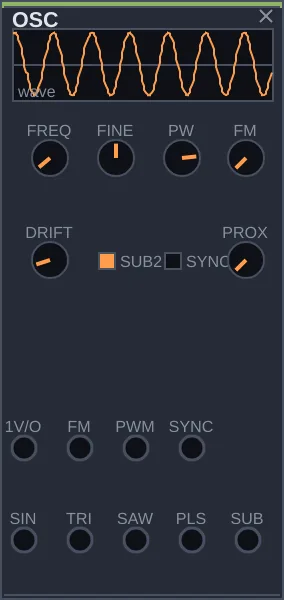
O que é
O OSC é um oscilador: ele produz uma nota contínua, sempre igual, a partir da qual quase todo som de sintetizador é construído. Ele entrega cinco formas de onda ao mesmo tempo, cada uma num jack de saída: seno, triângulo, dente de serra, pulso e uma voz mais grave travada na fase (o sub, de uma oitava abaixo até um dezesseis avos da frequência). Você escolhe qual usar, ou usa várias.
Como pensar nele
Pense no OSC como a matéria-prima. Sozinho ele soa cru, e é de propósito: o caráter vem do que você liga depois dele, como um filtro que tira brilho ou um envelope que dá forma à nota. Se você quer uma voz com personalidade pronta, o STRING e o MATTER já trazem isso; se quer um timbre que se transforma sozinho, experimente o WAVETABLE. O OSC é a base previsível, e por isso é o melhor lugar para aprender.
Controles
FREQ: a altura da nota, de 8 a 8000 Hz. Valores baixos viram vibração lenta; a região musical fica entre uns 50 e 1000 Hz.
FINE: afinação fina, até um semitom para cima ou para baixo. Use para afinar com outra voz, ou para desafinar de leve e engrossar o som.
PW: a largura do pulso, que só afeta a saída PLS. No meio, a onda é quadrada e soa oca; perto das pontas, fica fina e anasalada.
FM: quanto o sinal ligado na entrada FM mexe na altura. Com outro oscilador ali e este knob alto, o timbre fica metálico, de sino.
DRIFT: uma oscilação lenta e pequena na afinação, como a de um oscilador analógico. Em zero, a nota fica perfeitamente parada.
SYNC: liga a entrada SYNC. Com ela ativa, outro oscilador mais lento força este a recomeçar o ciclo, e girar FREQ passa a mudar o timbre em vez da altura.
PROX: mistura cada saída com uma versão mais escura de si mesma. É um jeito de amaciar o som sem gastar um filtro.
PD: a distorção de fase, só na saída SIN. A fase é dobrada antes do seno, e o timbre vai do seno puro a uma onda brilhante, como nos sintetizadores de phase distortion dos anos 1980.
UNI: o unísono, só na saída SAW: sete serras levemente desafinadas entre si. Sobe de uma serra simples a um coro espesso.
SUBD: o divisor do sub, de 2 a 16. A saída SUB fica travada na fase do oscilador, uma oitava abaixo em 2, duas em 4, e em intervalos fora da oitava nos outros valores.
Entradas: 1V/O recebe a altura vinda de um sequenciador ou quantizador, FM e PWM aceitam modulação, e SYNC recebe o oscilador que comanda o sincronismo. A entrada SUBD move o divisor por CV.
Experimente
Ligue a saída SAW do OSC numa entrada do MIXER e ouça um zumbido constante.
Gire FREQ devagar: a nota sobe e desce.
Troque o cabo para a saída PLS e mova PW de um lado ao outro. O timbre muda de oco para fino, sem a altura mudar.
Volte para SAW e passe o som por um FILTER antes do MIXER. Agora você está fazendo síntese subtrativa: começar com um som rico e tirar o que sobra.
WAVETABLE
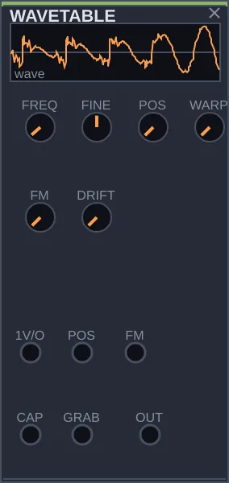
O que é
O WAVETABLE é um oscilador que guarda uma sequência de 16 formas de onda diferentes, como os quadros de uma animação, da mais brilhante (uma serra) à mais suave (um seno). O knob POS escolhe em que ponto dessa sequência você está. Movendo POS, o timbre muda de forma contínua, sem precisar de filtro.
Como pensar nele
Enquanto o OSC dá um som fixo que você esculpe depois, o WAVETABLE já nasce em movimento: basta algo mexendo em POS. Um LFO lento faz um pad que respira; um envelope faz cada nota começar brilhante e terminar escura. Ele também sabe ouvir: ligado ao SIGNAL-IN, captura um ciclo do som que entra e passa a usá-lo como forma de onda.
Controles
FREQ: a altura da nota, de 8 a 8000 Hz.
FINE: afinação fina, até um semitom para cada lado.
POS: a posição na tabela. No começo, o som é cheio de harmônicos; no fim, é quase um seno. A entrada POS soma a este knob, e é por ela que o timbre passa a se mover sozinho.
WARP: deforma a leitura de cada ciclo e acrescenta harmônicos com um sotaque digital, sem trocar de quadro.
FM: quanto o sinal na entrada FM mexe na altura.
DRIFT: uma pequena oscilação lenta na afinação.
DEF: a deformação da tabela; em 0, o WAVETABLE de sempre.
MODO: dobra (a forma lida é dobrada sobre si) ou rasgo (a cada ciclo, a leitura salta para outro ponto da tabela, sem estalo).
Entradas: 1V/O para a altura, POS para mover a posição, FM, CAP para o som a ser capturado e GRAB, um pulso que manda capturar um ciclo novo.
Experimente
Ligue OUT numa entrada do MIXER e gire POS de ponta a ponta. Ouça o timbre passar de áspero a liso.
Ligue a saída de um FUNCTION, em velocidade lenta, na entrada POS. Agora o som muda sozinho, em ciclos.
Para capturar: ligue o SIGNAL-IN na entrada CAP e um pulso do CLOCK em GRAB. A cada pulso, o oscilador passa a tocar um pedaço do som que está entrando.
ADDITIVE
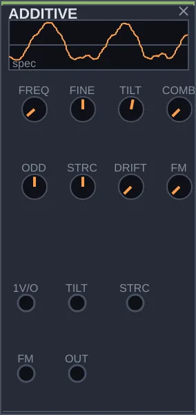
O que é
O ADDITIVE constrói o som somando 64 senos, cada um numa frequência diferente. Esses senos se chamam parciais: juntos, formam o timbre. Em vez de começar com um som rico e cortar, como faz um filtro, aqui você decide quanta força cada parcial recebe. É assim que se chega a órgãos, sinos, vibrafones e pads.
Como pensar nele
Os quatro knobs centrais moldam o espectro inteiro de uma vez, sem que você precise mexer em 64 controles. TILT decide o brilho, ODD equilibra parciais pares e ímpares, STRCH desafina as parciais entre si para soar como metal ou vidro, e COMB abre vales no espectro. Todos aceitam modulação: um envelope em TILT faz cada nota abrir o brilho no ataque, como um instrumento acústico.
Controles
FREQ: a nota fundamental, de 8 a 8000 Hz.
FINE: afinação fina, até um semitom para cada lado.
TILT: o brilho. Para a esquerda, só as parciais graves soam e o timbre fica escuro; para a direita, todas soam fortes.
ODD: o equilíbrio entre parciais. No meio, a série completa; à direita, só as ímpares, com um som oco de clarinete; à esquerda, só as pares, mais anasalado.
STRCH: estica ou comprime a distância entre as parciais. No meio, o som é afinado; para os lados, vira sino, metal ou algo indefinido.
COMB: abre vales regulares no espectro, como um filtro em pente. Em zero, nada muda.
FM: quanto o sinal na entrada FM mexe na altura.
DRIFT: faz cada parcial desafinar e respirar um pouco, de forma lenta. Em zero, o som é totalmente estável.
TENS: a tensão sobre o feixe de parciais. Cada um dos 64 parciais é uma fibra com a sua resistência; sob tensão, as fibras rompem uma a uma, às vezes em avalanche, e o timbre se esvazia. A ruptura é para sempre, até um pulso em RST.
Entradas: 1V/O para a altura, TILT e STRCH para modular esses dois controles, e FM. A entrada TENS soma tensão por CV, RST restaura o feixe, a saída RSG pulsa a cada fibra rompida e INT diz quanto do feixe continua inteiro.
Experimente
Ligue OUT numa entrada do MIXER, com TILT no meio. Você ouve uma nota suave.
Leve STRCH devagar para a direita. A nota afinada vira um som de sino.
Volte STRCH ao meio e mova ODD de um lado ao outro. Ouça o timbre passar de anasalado a oco.
Ligue a saída ENV de um ENVELOPE na entrada TILT, e a saída CLK do CLOCK na entrada GATE do ENVELOPE. A cada pulso, o som começa brilhante e escurece, como uma corda tocada.
OPERATOR
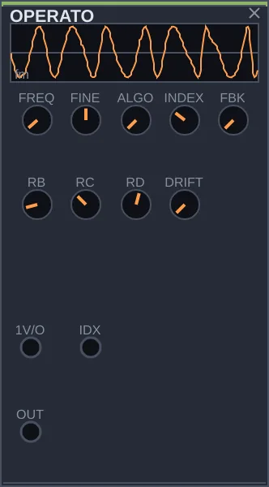
O que é
O OPERATOR é um sintetizador de FM com quatro osciladores de seno, chamados operadores. Em FM, um operador não soa sozinho: ele empurra a frequência de outro para frente e para trás muito depressa, e disso nascem harmônicos novos. É assim que se fazem pianos elétricos, sinos, baixos estalados e timbres metálicos, como nos sintetizadores digitais dos anos 1980.
Como pensar nele
Três decisões fazem o timbre: quem modula quem (ALGO), a relação de frequência entre os operadores (RB, RC, RD) e a força da modulação (INDEX). Comece com INDEX baixo e suba aos poucos: o som vai de um seno limpo a algo brilhante e áspero. O gesto mais útil é ligar um envelope na entrada IDX, para cada nota começar brilhante e ir escurecendo, como uma tecla de piano elétrico.
Controles
FREQ: a altura da nota, de 8 a 8000 Hz.
FINE: afinação fina, até um semitom para cada lado.
ALGO: escolhe um entre oito arranjos de quem modula quem. No começo, os operadores ficam em cadeia e o som é mais áspero; no fim, soam lado a lado, mais perto de um órgão.
RB, RC, RD: a relação de frequência de cada operador com o primeiro. Valores inteiros soam afinados; valores quebrados, como 2,5, soam como sino; valores altos, como metal.
INDEX: a força da modulação. Em zero, você ouve só senos puros; no máximo, um timbre muito brilhante.
FBK: faz o primeiro operador modular a si mesmo. Sozinho, já transforma o seno em algo parecido com um dente de serra.
DRIFT: desafina cada operador um pouquinho, de forma lenta. Em zero, tudo fica estável.
Entradas: 1V/O para a altura e IDX para modular a força da FM.
Experimente
Ligue OUT numa entrada do MIXER com INDEX em zero: um seno simples.
Suba INDEX devagar e ouça os harmônicos aparecerem.
Mude RB para um valor quebrado e o som vira sino.
Ligue a saída ENV de um ENVELOPE na entrada IDX, e a saída CLK do CLOCK na entrada GATE do ENVELOPE. Cada nota abre brilhante e se apaga, como um piano elétrico.
PULSAR
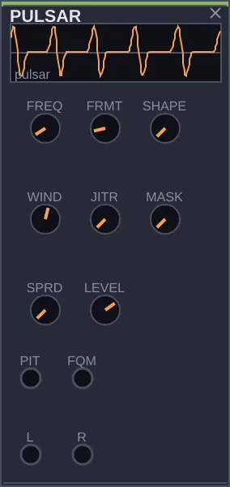
O que é
O PULSAR produz um trem de pequenos pulsos sonoros, cada um seguido de um silêncio. Quando os pulsos se repetem depressa, você ouve uma nota; quando ficam lentos, ouve um ritmo. A técnica vem do compositor Curtis Roads e tem uma propriedade curiosa: a altura e o timbre são controlados separadamente, então dá para mudar a cor do som sem desafiná-lo.
Como pensar nele
FREQ decide quantas vezes por segundo o pulso se repete, e portanto a nota. FRMT decide o que acontece dentro de cada pulso, e portanto o timbre: baixo soa oco, alto soa nasal. Abaixe FREQ até umas 30 repetições por segundo e cada pulso vira um evento que se ouve separado; com MASK e JITR, esses eventos ficam irregulares, como uma nuvem.
Controles
FREQ: a taxa de repetição dos pulsos, de 20 a 2000 Hz. É a altura da nota.
FRMT: a frequência dentro de cada pulso, de 0,1 a 8 vezes FREQ. É o timbre: baixo é oco, alto é brilhante.
SHAPE: a forma de cada pulso, de um seno simples a um pulso mais estreito e rico em harmônicos.
WIND: o contorno de cada pulso. Para a esquerda, as bordas são duras e o som é brilhante; no meio, é limpo; para a direita, cada pulso ataca rápido e decai, como uma percussão.
JITR: torna irregular o tempo e o volume de cada pulso. Em zero, o trem é rígido.
MASK: a chance de cada pulso ser pulado. Abre buracos e cria padrões rítmicos sem mudar a nota.
SPRD: espalha pulsos alternados entre esquerda e direita, alargando o som em estéreo.
LEVEL: o volume de saída.
Entradas: PIT para a altura e FQM para modular o timbre. Saídas L e R, para o estéreo.
Experimente
Ligue L numa entrada do MIXER e gire FRMT devagar. O timbre muda, mas a nota fica no mesmo lugar.
Leve FREQ para perto do mínimo. A nota se desfaz em pulsos que se ouvem um a um.
Com FREQ baixo, suba MASK e JITR. Os pulsos ficam esparsos e irregulares, como uma chuva.
Ligue a saída BI de um FUNCTION lento na entrada FQM. O timbre passeia sozinho sem desafinar.
SPECTRA
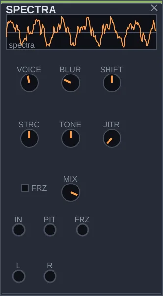
O que é
O SPECTRA escuta um som, encontra as frequências mais fortes que há nele e as toca de novo com um conjunto de osciladores de seno. O resultado é uma espécie de sombra do som original: reconhecível, mas feita só de tons puros, e que você pode transpor, deformar ou congelar.
Como pensar nele
Ele fica entre os módulos de fonte porque é a sua saída que soa, mas quase sempre precisa de algo na entrada IN: uma voz, um acorde, um tambor, o som de fora pelo SIGNAL-IN. Com poucas vozes, ele faz uma caricatura do som; com muitas, uma cópia fiel. O gesto mais forte é o FRZ: congela o último espectro e o deixa soando indefinidamente, como um pad tirado de qualquer instante.
Controles
VOICE: quantos senos o módulo usa, de 2 a 24. Poucos simplificam o som; muitos o reproduzem com fidelidade.
BLUR: a rapidez com que cada seno segue o som que entra. Em zero, acompanha de perto; no máximo, arrasta e borra, e o som parece derreter.
SHIFT: transpõe a reconstrução até duas oitavas para cima ou para baixo, sem mexer na escuta.
STRCH: afasta ou aproxima as frequências entre si, levando o som para algo metálico, de sino, sem mudar a altura percebida.
TONE: escurece ou realça os agudos da reconstrução. No meio, fica fiel ao que foi ouvido.
JITR: faz cada seno oscilar de leve, para a reconstrução nunca soar parada.
FRZ: congela a escuta. Os senos continuam tocando o último espectro.
MIX: a mistura entre o som original e a reconstrução. No máximo, você ouve só a reconstrução.
Entradas: IN para o som a analisar, PIT para transpor e FRZ para congelar com um gate. Saídas L e R.
Experimente
Ligue a saída OUT do CHORD na entrada IN do SPECTRA, e a saída L numa entrada do MIXER. Você ouve o acorde refeito em tons puros.
Baixe VOICE até 3 ou 4. O acorde vira um esboço de si mesmo.
Leve STRCH para um dos lados e ouça o acorde ficar metálico.
Ligue a saída EUC do CLOCK na entrada FRZ. O som congela e se solta no ritmo do relógio.
PLL
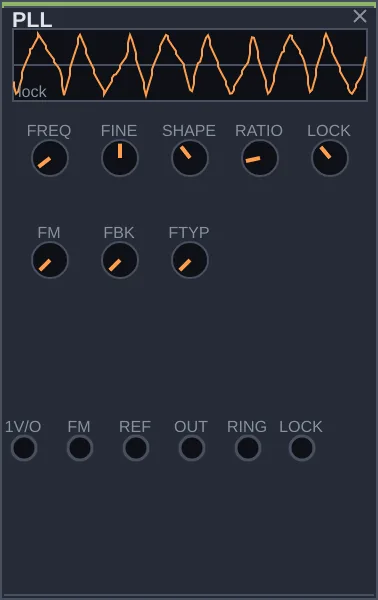
O que é
O PLL é um oscilador que sabe seguir outro. Sozinho, funciona como qualquer oscilador, com altura própria e uma forma de onda que você escolhe. Quando recebe um segundo sinal na entrada REF, ele ajusta a própria velocidade aos poucos até andar junto com esse sinal, como um músico que acerta o passo com outro.
Como pensar nele
O OSC também pode se prender a outro oscilador, mas de um golpe só (o sync). O PLL faz isso devagar, e esse caminho até travar é audível: um deslizar de altura. Com RATIO, ele trava numa oitava acima, numa abaixo ou em divisões mais fundas da referência. A saída LOCK diz o quanto ele está travado, e serve para fazer outras coisas reagirem a isso.
Controles
FREQ: a altura quando não há referência, e o ponto de partida quando há.
FINE: afinação fina, até um semitom para cada lado.
SHAPE: a forma da onda, passando de seno para triângulo, dente de serra e quadrada.
RATIO: em que relação com a referência ele trava. Em 1, na mesma nota; em 2, uma oitava acima; perto do mínimo, muito abaixo.
LOCK: a força com que persegue a referência. Baixo, ele desliza devagar até chegar; alto, trava logo, mas fica mais nervoso.
FM: quanto o sinal na entrada FM mexe na altura.
FBK: quanto o próprio sinal volta para dentro do circuito, acrescentando textura sem desafinar.
FTYP: escolhe entre seis tipos de retorno, cada um com uma cor diferente.
PERTO: o limiar do quase-encontro, em Hz. Quando o batimento entre as frequências fica mais lento que isso, elas se encontram.
Entradas: 1V/O para a altura, FM e REF, a referência a seguir. Saídas: OUT, RING (o PLL multiplicado pela referência) e LOCK, um sinal de controle que indica o quanto ele está travado. A saída ENC pulsa quando as frequências se encontram, SEP quando voltam a se afastar, e BAT dá o batimento como CV.
Experimente
Ligue OUT numa entrada do MIXER. Sem nada em REF, é um oscilador comum; gire SHAPE para ouvir as formas.
Ligue a saída SAW de um OSC na entrada REF. O PLL procura a altura do OSC e se prende a ela.
Baixe LOCK. Agora ele demora para chegar, e você ouve a altura deslizando.
Mude RATIO para 2. Ele trava uma oitava acima do OSC.
CHORD
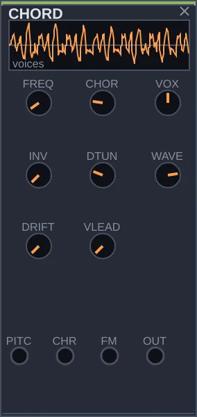
O que é
O CHORD transforma uma nota em um acorde. Você dá uma altura e ele toca de duas a quatro vozes afinadas em cima dela, com formatos que vão do uníssono a acordes com nona. Normalmente, num modular, um acorde exige vários osciladores e quantizadores; aqui basta um módulo.
Como pensar nele
Pense nele como uma mão no teclado que já sabe o formato do acorde. O knob CHORD escolhe o formato, VOX quantas notas ele tem e INV a disposição das notas. Uma onda lenta na entrada CHRD faz o formato mudar sozinho; a saída ROOT do HARMONY na entrada PITCH faz a fundamental acompanhar as trocas de tom. Com VLEAD, cada voz vai para a nota mais próxima do acorde seguinte, deslizando, e a troca soa suave como um coral.
Controles
FREQ: a nota fundamental, de 16 a 4000 Hz.
CHORD: o formato do acorde, entre dez tabelas, do uníssono a acordes com nona.
VOX: quantas vozes soam, de duas a quatro.
INV: sobe as notas mais graves uma oitava. Muda a cara do acorde sem mudar as notas.
VLEAD: na troca de acorde, faz cada voz ir para a nota mais próxima, deslizando. Em zero, todas saltam ao mesmo tempo.
DTUNE: desafina as vozes entre si. Um pouco engrossa o som; muito vira um paredão.
WAVE: a forma de onda das vozes, de dente de serra a pulso e triângulo.
DRIFT: deixa cada voz oscilar de leve na afinação, de forma lenta.
Entradas: PITCH para a fundamental, CHRD para trocar o formato e FM.
Experimente
Ligue OUT numa entrada do MIXER e gire CHORD devagar. Ouça os formatos passarem.
Mude VOX de 2 para 4 e o acorde se enche.
Suba DTUNE um pouco: as vozes se afastam e o som fica mais largo.
Ligue a saída CLK do CLOCK na entrada CLK de uma SEQUENCE, e a saída PTCH da SEQUENCE na entrada PITCH do CHORD. O acorde passa a andar com a sequência.
NOISE
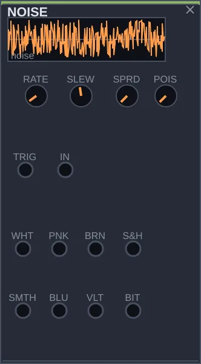
O que é
O NOISE produz ruído, o som de todas as frequências misturadas ao acaso, em várias cores ao mesmo tempo, cada uma numa saída: do branco, chiado e brilhante, ao marrom, grave como o mar. Ele também produz valores aleatórios lentos, que servem para fazer outros módulos mudarem sozinhos.
Como pensar nele
O NOISE tem dois usos bem diferentes. Como som, é a matéria do vento, da chuva, dos pratos e do estalo de uma caixa. Como acaso, é uma fonte de variação para patches generativos: a saída S&H sorteia um valor novo a cada pulso e o segura até o próximo, e a SMTH desliza de um valor a outro. Ligue uma delas na altura de um oscilador, passando por um quantizador, e você tem uma melodia que nunca se repete igual.
Controles
RATE: o ritmo dos sorteios das saídas S&H e SMTH, de muito lento a 2000 por segundo. Se a entrada TRIG estiver ligada, ela manda no lugar deste knob.
SLEW: quanto tempo a saída SMTH leva para chegar a cada valor novo. Em zero, ela salta; no máximo, desliza devagar.
SPRD: o tipo de sorteio. Em zero, qualquer valor é igualmente provável; no máximo, os valores perto do meio aparecem mais, e as mudanças ficam mais suaves.
POIS: troca o ritmo regular dos sorteios por tempos irregulares, ao acaso, mantendo a mesma média.
Saídas de som: WHT (branco), PNK (rosa), BRN (marrom), BLU (azul), VLT (violeta) e BIT (ruído digital). Saídas de acaso: S&H e SMTH. Entradas: TRIG, para disparar os sorteios, e IN.
Experimente
Ligue PNK numa entrada do MIXER. Você ouve um chiado suave, como chuva.
Troque para BRN, mais grave, e depois para WHT, mais brilhante.
Ligue S&H na entrada CV de um QUANTIZER, e a saída PTCH dele na entrada 1V/O de um OSC que esteja soando. A nota passa a saltar ao acaso, sempre dentro da escala.
Ligue a saída CLK do CLOCK na entrada TRIG: os saltos passam a acontecer no ritmo do relógio.
MATTER
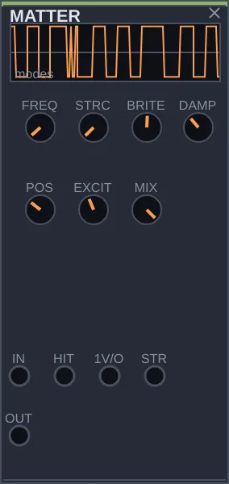
O que é
O MATTER simula um objeto que vibra quando é tocado: uma corda, um sino, uma placa de metal, um tubo. Por dentro, ele tem 24 ressonâncias que soam juntas, como as de um objeto real. Você dá um golpe e ouve o objeto responder, com a afinação e o material que escolher.
Como pensar nele
Um oscilador filtrado soa como eletrônica; o MATTER soa como algo sendo tocado. Você não monta o timbre harmônico por harmônico: escolhe o material em STRC e onde o objeto é golpeado em POS, e depois o excita. O golpe pode vir de dentro, pela entrada HIT, ou de fora, de qualquer som ligado em IN. Um CLOCK batendo em HIT já é percussão afinada.
Controles
FREQ: a afinação do objeto, de 20 a 8000 Hz.
STRC: o material. No começo, uma corda, de som afinado e doce; no fim, sino ou metal, com ressonâncias desencontradas.
BRITE: quantas ressonâncias agudas soam. Baixo é abafado; alto é brilhante.
DAMP: quanto tempo o objeto continua soando depois do golpe. Baixo é um toque curto; alto é um anel longo.
POS: o ponto onde o objeto é golpeado. Mudando o ponto, algumas ressonâncias somem e outras aparecem, como acontece num instrumento de verdade.
EXCIT: quanto ruído entra no golpe. Baixo é um toque limpo; alto tem mais ar no ataque.
MIX: a mistura entre o golpe cru e a ressonância do objeto. No máximo, só o corpo do objeto.
Entradas: IN, para fazer ressoar um som de fora; HIT, um pulso que golpeia; 1V/O, para a afinação; STR, para mudar o material.
Experimente
Ligue OUT numa entrada do MIXER, e a saída CLK do CLOCK na entrada HIT. Você ouve batidas afinadas.
Gire STRC de ponta a ponta. A batida passa de corda a sino.
Suba DAMP para os golpes se emendarem num anel contínuo.
Mova POS devagar e ouça o timbre mudar conforme o ponto do golpe.
STRING
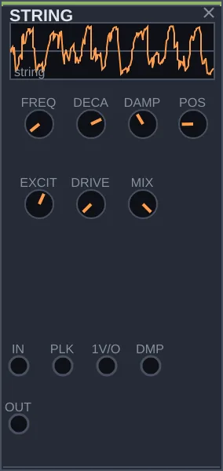
O que é
O STRING simula uma corda: pinçada, como num violão; martelada, como num piano; ou friccionada, como num violino. Ele recria o comportamento de uma corda que vibra e vai perdendo energia, e por isso o ataque e o corpo do som soam naturais, mesmo sendo sintéticos.
Como pensar nele
O MATTER é o módulo dos objetos que ressoam, como sinos e placas; o STRING é o das cordas. O gesto principal é POS, o ponto onde a corda é tocada: mudando esse ponto, alguns harmônicos somem, como quando um violonista toca mais perto da ponte. Um pulso em PLK pinça a corda; um som contínuo em IN faz a corda cantar como se fosse arcada.
Controles
FREQ: a afinação da corda, de 20 a 4000 Hz.
DECAY: quanto tempo a corda soa depois de pinçada. Baixo é seco; alto quase não acaba.
DAMP: o brilho. Alto deixa a corda escura, como uma corda velha; baixo mantém o brilho de uma corda nova.
POS: o ponto onde a corda é tocada. Perto do meio, os harmônicos pares somem e o som fica oco.
EXCIT: quanto ruído entra no golpe, como o som do dedo ou da palheta.
DRIVE: satura a corda por dentro, levando-a do som acústico a um som distorcido.
MIX: a mistura entre o golpe cru e a corda. No máximo, só a corda.
Entradas: IN, um som que faz a corda vibrar; PLK, um pulso que a pinça; 1V/O, para a afinação; DMP, para mudar o brilho.
Experimente
Ligue OUT numa entrada do MIXER, e a saída EUC do CLOCK na entrada PLK. A corda é pinçada no ritmo do relógio.
Gire DECAY: das notas secas às que se emendam.
Mova POS devagar e ouça o timbre mudar com o ponto do toque.
Ligue a saída PTCH de uma SEQUENCE, movida pelo mesmo CLOCK, na entrada 1V/O. Agora a corda toca uma linha melódica.
DRUM
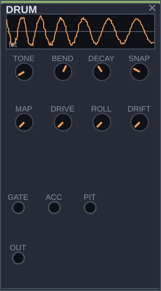
O que é
O DRUM é uma voz de percussão pronta: a cada pulso na entrada GATE, ele toca um golpe. Com poucos knobs, vai do bumbo à caixa, ao tom e ao chimbal, e muda de caráter entre o som das baterias eletrônicas antigas e um som mais acústico.
Como pensar nele
Montar um bumbo do zero exige vários módulos; o DRUM entrega um pronto. Ele precisa de quem diga quando tocar: um CLOCK ou, melhor, um TRIGSEQ, que gera padrões rítmicos em quatro linhas. Quatro DRUM, cada um numa linha do TRIGSEQ, formam um kit. E como TONE aceita uma altura pela entrada PIT, dá para tocar uma linha de toms.
Controles
TONE: a altura do corpo do golpe, de 20 a 1000 Hz. Grave é bumbo; médio, tom ou caixa; agudo, algo como uma clave.
BEND: o quanto a altura cai logo depois do golpe. Alto dá o peso do bumbo; zero mantém o golpe numa altura só.
DECAY: a duração, de um clique curto a um grave que sustenta.
SNAP: a quantidade de estalo no ataque, o que dá corpo à caixa e ao chimbal.
MAP: o caráter, passando por timbres de baterias eletrônicas até um som acústico.
DRIVE: satura a saída e deixa o golpe mais agressivo.
ROLL: faz o módulo se disparar sozinho, de um rufo lento a um zumbido. Em zero, ele só toca quando recebe um pulso.
DRIFT: varia levemente cada golpe, para a repetição soar humana.
Entradas: GATE, o pulso que dispara o golpe; ACC, para acentuar; PIT, para a altura.
Experimente
Ligue OUT numa entrada do MIXER, e a saída CLK do CLOCK na entrada GATE. Você ouve um bumbo marcando o tempo.
Suba TONE e SNAP, baixe DECAY: o bumbo vira uma caixa seca.
Suba ROLL sem nada em GATE: o módulo toca sozinho, num rufo.
Ligue o CLOCK a um TRIGSEQ e as saídas T1 e T2 em dois DRUM ajustados de forma diferente. Você tem uma pequena bateria.
SIGNAL-IN
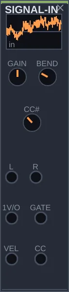
O que é
O SIGNAL-IN traz o mundo de fora para dentro do patch. Ele recebe o som da entrada de áudio do computador, como um microfone ou outro instrumento, e as notas de um teclado ou controlador MIDI, e transforma tudo em sinais que os outros módulos entendem.
Como pensar nele
Com ele, alguém de fora pode tocar o Rasgo Modular: a altura da tecla vai para um oscilador, o aperto da tecla abre um envelope, e a roda de modulação do teclado pode abrir um filtro. Ele também deixa o patch processar som de fora, passando uma voz ou uma guitarra por filtros e espaços. O módulo começa desligado: o app só abre o microfone e o MIDI depois que você liga o ON e cabeia alguma saída.
Controles
GAIN: o volume do áudio que entra, de zero ao dobro.
BEND: quantos semitons a alavanca de pitch bend do teclado move a altura, de zero a duas oitavas.
CC#: qual controle do teclado a saída CC segue. O número 1 costuma ser a roda de modulação.
ON: liga a entrada de fora. Desligado, que é como o módulo começa, nada entra no patch.
Saídas: L e R, o áudio que entra; 1V/O, a altura da tecla tocada; GATE, aberto enquanto a tecla está pressionada; VEL, a força com que ela foi tocada; CC, o valor do controle escolhido.
Experimente
Com um microfone ou instrumento ligado ao computador, ligue L numa entrada do MIXER, ligue o ON e ajuste GAIN até ouvir o som.
Passe esse som por um FILTER ou pelo SPACE antes do MIXER para transformá-lo.
Com um teclado MIDI e o ON ligado, ligue 1V/O na entrada 1V/O de um OSC, e GATE na entrada GATE de um ENVELOPE que tenha o som do OSC na entrada IN. O teclado passa a tocar o patch.
TRANSFORM 16 módulos
FILTER
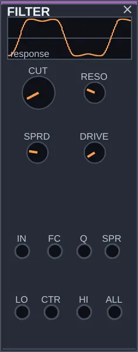
O que é
O FILTER deixa passar parte das frequências de um som e corta o resto. Ele tem três saídas que funcionam ao mesmo tempo: LO, que deixa passar os graves; CTR, a faixa do meio; e HI, os agudos. Girando o corte, você ouve o som escurecer ou clarear, como quando se cobre a boca ao falar.
Como pensar nele
É o segundo módulo de quase todo patch: depois de uma fonte rica em harmônicos, como a serra de um OSC, o filtro esculpe o timbre. O que ele tem de particular é o SPRD: em zero, as três saídas usam o mesmo corte; subindo, elas se afastam e viram três filtros diferentes, cada um numa região do som. Com a ressonância no máximo, o filtro passa a soar sozinho, como um oscilador de seno.
Controles
Na interface 0.1.7, CUT tem um knob maior que RESO para destacar o gesto principal de abrir e fechar o timbre. Essa diferença é visual; as faixas e a resposta sonora permanecem as mesmas.
CUT: a frequência de corte, de 20 a 20000 Hz. É o controle principal: gire e ouça o timbre abrir e fechar.
RESO: realça as frequências perto do corte, dando um timbre mais nasal. No máximo, o filtro começa a soar sozinho.
SPRD: afasta as três saídas em frequência. Em zero, as três seguem o mesmo corte; no máximo, cada uma fica numa região do som.
DRIVE: satura o sinal antes de filtrar, engordando o som.
Entradas: IN, o som a filtrar; FC, para mover o corte (com 1 V por oitava); Q, para mover a ressonância; SPR, para mover o afastamento. Saídas: LO, CTR, HI e ALL, que soma as três.
Experimente
Ligue a saída SAW de um OSC na entrada IN, e a saída ALL numa entrada do MIXER.
Gire CUT devagar de um lado ao outro e ouça o brilho entrar e sair.
Suba RESO até a metade e repita: o corte fica marcado, quase uma voz.
Ligue a saída ENV de um ENVELOPE na entrada FC, com o CLOCK na entrada GATE do envelope. O filtro abre a cada pulso, no efeito que se ouve em tanta música eletrônica.
LADDER
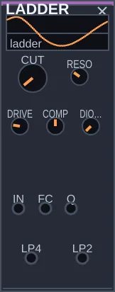
O que é
O LADDER é o filtro em escada, o filtro do grave: quatro degraus de 6 dB em cascata, com a saída do último devolvida à entrada como ressonância. É o desenho que R. Moog patenteou em 1969, aqui com um knob que vai da escada de transistores, redonda, à escada de diodos, ácida.
Como pensar nele
O FILTER é limpo e estável; o LADDER é o filtro que se comprime e encorpa quando é empurrado. Três coisas o distinguem. DIODO acopla os degraus, e no meio do caminho há escadas que não existem em circuito. O pico fica afinado no CUT em qualquer posição de DIODO, e em RESO 1 a escada canta uma senoide afinada. E COMP devolve o grave que, na escada original, some quando a ressonância sobe.
Controles
CUT: a frequência de corte, de 20 Hz a 20 kHz.
RESO: a ressonância. Em 1, a escada auto-oscila; 0,9 significa a mesma proximidade do limiar em qualquer DIODO.
DRIVE: empurra a entrada contra a saturação dentro do laço; o nível de saída é compensado.
COMP: devolve o grave. Em 1, o grave fica inteiro com qualquer ressonância; em 0, afunda como no original.
DIODO: de 0 (transistores, redondo) a 1 (diodos, ácido), contínuo.
Entradas: IN recebe o som, FC move o corte em 1 volt por oitava, Q move a ressonância. Saídas: LP4 é a saída de 24 dB por oitava, LP2 a tomada do segundo degrau, de 12 dB por oitava, mais brilhante.
Experimente
Ligue a saída SAW de um OSC em IN, LP4 num VCA e o VCA no MIXER. Ponha CUT perto de 200 Hz.
Suba RESO com COMP em 1: o pico canta e o grave fica. Baixe COMP e ouça o grave afundar.
Ponha DIODO em 1, RESO em 0,85 e DRIVE em 0,6, com um envelope curto em FC: o baixo ácido.
Tire o cabo de IN, ponha RESO em 1 e ligue a altura de um QUANTIZER em FC: a escada toca a melodia como um oscilador.
FORMANT
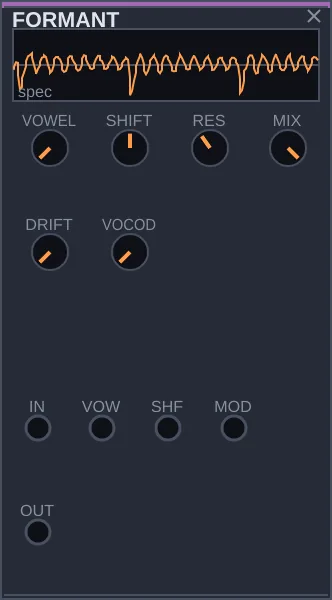
O que é
O FORMANT faz um som pronunciar vogais. A voz humana distingue um A de um I pela forma como reforça algumas faixas de frequência, chamadas formantes. Este módulo tem cinco filtros posicionados como os formantes da voz e passa de uma vogal para outra quando você gira VOWEL.
Como pensar nele
Passe por ele qualquer som rico, como um acorde do CHORD ou uma serra, e o som começa a falar. O knob VOWEL percorre A, E, I, O e U; modulado, faz o som cantar uma sequência de vogais. SHIFT muda o tamanho da voz, de grande e grave a pequena e aguda, sem mudar a nota. Com outro som na entrada MOD, ele vira um vocoder simples de cinco faixas.
Controles
VOWEL: a vogal, percorrendo A, E, I, O e U.
SHIFT: o tamanho da voz. Para um lado, grande e grave; para o outro, pequena e aguda. A nota não muda.
RES: o quanto os cinco filtros se estreitam. Baixo dá uma cor sutil; alto faz cada formante apitar.
VOCOD: troca as vogais pelo som que entra em MOD, que passa a controlar os cinco filtros. Sem nada em MOD, não tem efeito.
MIX: a mistura entre o som original e o som filtrado.
DRIFT: faz cada formante oscilar de leve, para a voz respirar.
Entradas: IN, o som que vai falar; VOW e SHF, para modular a vogal e o tamanho; MOD, o som que comanda o modo vocoder.
Experimente
Ligue a saída OUT do CHORD na entrada IN, e OUT numa entrada do MIXER.
Gire VOWEL devagar: o acorde pronuncia as vogais.
Suba RES e ouça as vogais ficarem mais marcadas.
Ligue a saída BI de um FUNCTION lento na entrada VOW. O acorde passa a cantar vogais sozinho.
VOCODER
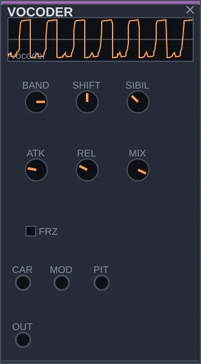
O que é
O VOCODER faz um som falar com a voz de outro. Ele escuta um som, normalmente uma voz, e mede quanta energia há em cada faixa de frequência; depois aplica esse desenho a um segundo som, rico em harmônicos. O resultado é o som do segundo com a fala do primeiro: o efeito de voz robótica de tanta música eletrônica.
Como pensar nele
Ele precisa de duas entradas: CAR, a portadora, que é o som que vai falar (uma serra, um acorde), e MOD, que é quem fala (uma voz pelo SIGNAL-IN, um tambor, uma gravação). Com poucas faixas, o resultado é grosso e robótico; com muitas, a fala fica clara. Nada na entrada CAR? Ele usa uma serra interna, afinável pela entrada PIT.
Controles
BANDS: quantas faixas de frequência, de 4 a 20. Poucas soam robóticas; muitas deixam a fala inteligível.
SHIFT: muda o tamanho da voz resultante, de grande a pequena, sem mudar o que é dito.
ATK: a rapidez com que cada faixa responde. Curto, as consoantes saem secas; longo, tudo amacia.
REL: quanto tempo cada faixa leva para soltar. Curto é nítido; longo borra as sílabas num pad.
SIBIL: quanto do agudo da voz passa direto, para os S e T ficarem claros.
FRZ: congela o desenho atual. A portadora continua dizendo a última sílaba indefinidamente.
MIX: a mistura entre a portadora original e a portadora falando.
Entradas: CAR, a portadora; MOD, a voz que fala; PIT, a altura da serra interna quando não há nada em CAR.
Experimente
Ligue a saída SAW de um OSC em CAR, e a saída L do SIGNAL-IN, com um microfone, em MOD. Ligue OUT numa entrada do MIXER e fale.
Baixe BANDS para 6 e ouça a voz ficar robótica; suba para 20 e ela fica clara.
Suba REL: as palavras se emendam num som contínuo.
Sem microfone, ligue a saída OUT de um DRUM em MOD. Cada batida abre a portadora no seu próprio timbre.
RESONATOR
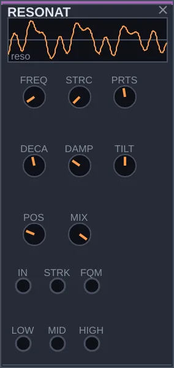
O que é
O RESONATOR é um corpo que ressoa quando algo bate nele. Você liga qualquer som na entrada, um golpe de tambor, um ruído, uma voz, e ele responde como uma marimba, uma taça ou um sino, conforme o ajuste. Tem três saídas, graves, médios e agudos, que podem ir para lugares diferentes.
Como pensar nele
O MATTER também ressoa, mas traz o próprio golpe; o RESONATOR deixa você escolher o que bate. Um DRUM seco vira marimba afinada; um NOISE suave vira vento numa taça. O knob TILT decide qual das três saídas domina: com LOW e HIGH em lugares diferentes, girar TILT faz a energia passar de um lado ao outro.
Controles
FREQ: a afinação do corpo, de 20 a 5000 Hz.
STRC: a estrutura. No começo, as ressonâncias são afinadas entre si; no fim, ficam desencontradas, como uma barra de metal ou um sino.
PRTS: quantas ressonâncias o corpo tem, de 1 a 24. Com uma só, é quase um filtro.
DECAY: quanto tempo o corpo soa depois do golpe, de um toque curto a um anel longo.
DAMP: faz os agudos sumirem antes dos graves, como numa corda de verdade.
TILT: qual região domina. Para um lado, a saída LOW; para o outro, a HIGH.
POS: o ponto onde o corpo é golpeado, que muda quais ressonâncias aparecem.
MIX: a mistura entre o golpe cru e a ressonância.
Entradas: IN, o som que golpeia; STRK, um pulso para um golpe interno; FQM, para a afinação. Saídas: LOW, MID e HIGH.
Experimente
Ligue a saída CLK do CLOCK na entrada GATE de um DRUM, e a saída OUT do DRUM na entrada IN do RESONATOR. Ligue MID numa entrada do MIXER. Cada batida soa como uma tecla de marimba.
Gire STRC e ouça a marimba virar sino.
Suba DECAY para as notas se prolongarem.
Troque o DRUM por PNK de um NOISE em IN, com DECAY alto. Você ouve um anel suave, como o de uma taça.
WASP
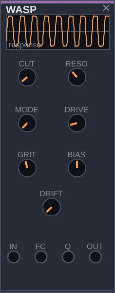
O que é
O WASP é um filtro que distorce. Inspirado num sintetizador do fim dos anos 1970 conhecido pelo som áspero, ele corta frequências como o FILTER, mas suja o som quando a ressonância sobe. É o filtro para baixos agressivos, solos que cortam e drones que rangem.
Como pensar nele
O FILTER é limpo e preciso; o WASP é o contraponto sujo. Três knobs dão a medida da sujeira: DRIVE empurra o som contra a distorção antes de filtrar, GRIT decide o quanto o filtro range ao ressoar, e BIAS deixa a distorção desequilibrada, mais zumbida. Com a ressonância alta, ele soa sozinho, e esse som também é áspero.
Controles
CUT: a frequência de corte, de 20 a 24000 Hz.
RESO: a ressonância. Perto do máximo, o filtro soa sozinho.
MODE: o tipo de filtro, passando de corta-agudos para faixa do meio e corta-graves.
DRIVE: o ganho de entrada, que empurra o som para a distorção antes de filtrar.
GRIT: o quanto o filtro distorce ao ressoar. Baixo é quase limpo; alto range.
BIAS: desequilibra a distorção, acrescentando harmônicos pares e um zumbido.
DRIFT: uma oscilação lenta no corte e na ressonância.
Entradas: IN, o som a filtrar; FC, para mover o corte; Q, para a ressonância.
Experimente
Ligue a saída SAW de um OSC na entrada IN, e OUT numa entrada do MIXER.
Suba RESO até uns dois terços e gire CUT: ouça o filtro morder.
Suba GRIT e DRIVE. O som fica áspero e agressivo.
Ligue a saída ENV de um ENVELOPE em FC, com o CLOCK na entrada GATE do envelope. Você tem um baixo ácido.
LPG
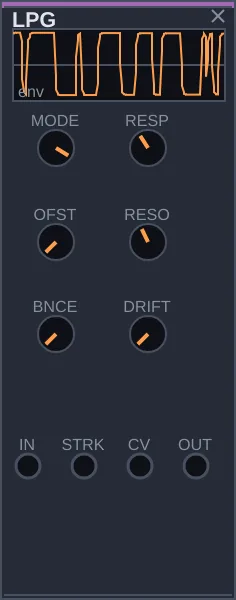
O que é
O LPG, de low pass gate, é um portão que abre e fecha o som a cada golpe, ao mesmo tempo baixando o volume e escurecendo o timbre. Ele imita um componente antigo, o vactrol, que reage rápido mas solta devagar, e por isso cada nota soa como algo percutido: uma marimba, uma kalimba, uma gota.
Como pensar nele
Dá para montar algo parecido com FILTER, VCA e ENVELOPE, mas falta o jeito do vactrol: subida instantânea e uma queda que vai freando perto do fim. O LPG traz isso pronto. Basta um som contínuo na entrada IN e pulsos na entrada STRK: cada pulso vira uma nota tocada. MODE escolhe se ele age mais como filtro, mais como controle de volume ou como os dois.
Controles
MODE: para a esquerda, só filtro; para a direita, só volume; no meio, os dois juntos, que é o som característico do LPG.
RESP: quanto tempo a nota leva para morrer depois do golpe, de um toque curtíssimo a uns dois segundos e meio. A subida é sempre rápida.
OFST: quanto o portão fica aberto em repouso. Em zero, fecha totalmente entre os golpes.
RESO: a ressonância do filtro, que dá um tom mais marcado.
BNCE: acrescenta um pequeno repique logo depois de cada golpe.
DRIFT: varia de leve, e de forma lenta, a duração de cada nota.
Entradas: IN, o som; STRK, o pulso que golpeia; CV, para abrir o portão com um sinal contínuo.
Experimente
Ligue a saída TRI de um OSC na entrada IN, e OUT numa entrada do MIXER. Por enquanto, silêncio: o portão está fechado.
Ligue a saída EUC do CLOCK na entrada STRK. Cada pulso vira uma nota de timbre percutido.
Gire RESP para ouvir as notas ficarem curtas ou longas.
Ligue a saída PTCH de uma SEQUENCE, movida pelo mesmo CLOCK, na entrada 1V/O do OSC. Agora você tem uma linha de marimba.
VCA
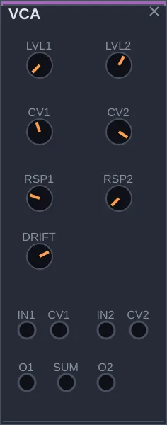
O que é
O VCA controla o volume de um som por meio de outro sinal. Ele tem dois canais iguais: o som entra em IN, um sinal de controle entra em CV, e o volume da saída sobe e desce conforme esse controle. É o módulo mais usado de qualquer modular.
Como pensar nele
Pense nele como uma mão no botão de volume, movida por outro módulo. Com um envelope no controle, cada nota ganha começo, meio e fim. Com uma onda lenta, o volume ondula, no efeito chamado tremolo. Ele também serve para dosar um sinal de controle antes de mandá-lo a outro lugar, e a saída SUM soma os dois canais, como um mixer pequeno. Atenção: o nível começa em zero, então o canal fica mudo até algo chegar ao CV ou você subir o LVL.
Controles
LVL1, LVL2: o volume de cada canal. O sinal de controle soma a este valor.
CV1, CV2: o quanto o sinal de controle age, e em que sentido. Negativo inverte: o volume cai quando o controle sobe.
RSP1, RSP2: a curva de resposta. Em zero, linear; no máximo, exponencial, que soa mais natural para volume.
DRIFT: uma oscilação lenta e pequena nos dois volumes.
SAT: a cor de um VCA analógico. Satura a entrada antes do ganho, como o par de transistores de um OTA: um pouco engorda o som, muito o comprime e o aquece. Em 0, o VCA é limpo.
Entradas: IN1 e IN2, os sons; CV1 e CV2, os controles. Saídas: O1, O2 e SUM, a soma dos dois.
Experimente
Ligue a saída SAW de um OSC em IN1, e O1 numa entrada do MIXER. Silêncio: LVL1 está em zero.
Suba LVL1 devagar e o som aparece.
Volte LVL1 a zero e ligue a saída ENV de um ENVELOPE em CV1, com o CLOCK na entrada GATE do envelope. O som agora pulsa com as notas.
Troque o envelope pela saída UNI de um FUNCTION lento: o volume ondula, num tremolo.
VCA4
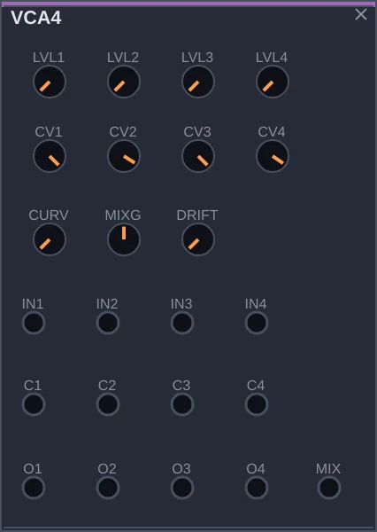
O que é
O VCA4 reúne quatro controles de volume num só painel, mais uma saída que soma os quatro. Cada canal funciona como no VCA: o som entra, um sinal de controle decide o volume.
Como pensar nele
É o VCA para quando o patch cresce: quatro vozes, cada uma com seu envelope; as saídas grave, média e aguda de um RESONATOR, cada uma respirando num ritmo; ou simplesmente quatro sons somados na saída MIX, como um mixer. Os quatro canais compartilham a mesma curva de resposta. Assim como no VCA, os níveis começam em zero.
Controles
LVL1, LVL2, LVL3, LVL4: o volume de cada canal. O controle de cada um soma a este valor.
CV1, CV2, CV3, CV4: o quanto o controle de cada canal age. Negativo inverte o sentido.
CURVE: a curva dos quatro canais, de linear a exponencial.
MIXG: o volume da saída MIX, a soma dos quatro.
DRIFT: uma oscilação lenta e pequena nos quatro volumes.
Entradas: IN1 a IN4, os sons; C1 a C4, os controles. Saídas: O1 a O4 e MIX.
Experimente
Ligue as saídas LOW, MID e HIGH de um RESONATOR, que esteja soando, em IN1, IN2 e IN3, e MIX numa entrada do MIXER.
Suba LVL1, LVL2 e LVL3 até ouvir as três regiões.
Ligue saídas de FUNCTION, CHAOS ou NOISE, em velocidades diferentes, em C1, C2 e C3, e baixe os LVL. Cada região do som passa a respirar no seu próprio ritmo.
SHAPE
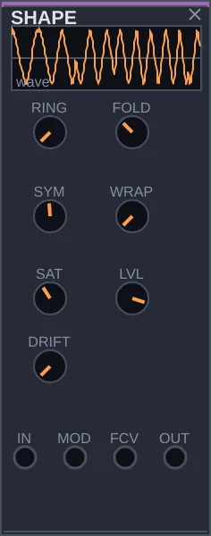
O que é
O SHAPE enriquece um som distorcendo-o de formas controladas. Ele pega uma onda simples, como um seno, e a dobra, satura ou multiplica por outra, criando harmônicos novos. É uma técnica ligada a sintetizadores da costa oeste dos Estados Unidos, que preferiam acrescentar harmônicos a cortá-los com filtros.
Como pensar nele
O filtro tira harmônicos de um som rico; o SHAPE faz o caminho inverso, a partir de um som pobre. O gesto principal é FOLD: quando o sinal passa de um limite, ele é dobrado de volta, e cada dobra acrescenta brilho. Com um envelope na entrada FCV, a nota abre o timbre no ataque e fecha depois. RING multiplica o som pelo que entra em MOD, o que dá timbres de sino.
Controles
RING: mistura o som com o produto dele pelo sinal da entrada MOD. No máximo, você ouve só o produto, metálico.
FOLD: a quantidade de dobra. Quanto mais, mais harmônicos agudos.
SYM: desloca o centro da dobra e acrescenta harmônicos pares, deixando o som mais anasalado.
WRAP: troca parte da dobra por um corte seco que reaparece do outro lado, mais brutal.
SAT: arredonda os picos depois da dobra, amaciando o resultado.
LVL: o volume de saída.
DRIFT: uma oscilação lenta na quantidade de dobra.
TEAR: a dobra que rasga. Uma dobra comum reflete sempre no mesmo ponto; com TEAR acima de 0, o ponto muda a cada ciclo da entrada, sorteado na passagem por zero, sem estalo. A forma fica um pouco diferente a cada ciclo.
Entradas: IN, o som; MOD, o segundo sinal para o RING; FCV, para modular a dobra.
Experimente
Ligue a saída SIN de um OSC na entrada IN, e OUT numa entrada do MIXER. Você ouve um seno limpo.
Suba FOLD devagar e ouça o seno ganhar brilho, dobra por dobra.
Mova SYM para um lado: o som fica mais anasalado.
Volte FOLD a zero, ligue a saída SAW de outro OSC em MOD e suba RING. Afine os dois osciladores em notas distantes e o som vira sino.
SHIFTER
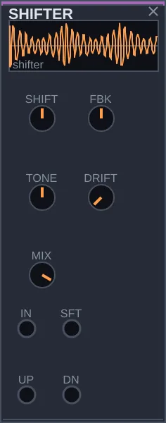
O que é
O SHIFTER desloca todas as frequências de um som pela mesma quantidade em hertz. A diferença para a transposição está na conta: transpor multiplica as frequências e mantém a relação entre elas; deslocar soma um valor fixo e desfaz essa relação. Por isso o som afinado fica metálico, de sino, e com deslocamentos pequenos ganha um movimento giratório.
Como pensar nele
Ele entrega dois resultados ao mesmo tempo: UP, com o som deslocado para cima, e DN, para baixo. Deslocamentos de poucos hertz criam uma ondulação lenta que nunca se fecha; deslocamentos grandes transformam acordes em clangor. Com FBK, a saída volta para a entrada e o som sobe ou desce sem parar, numa ilusão de escada infinita.
Controles
SHIFT: o deslocamento, de 2000 Hz para baixo a 2000 Hz para cima. Em zero, o som passa intacto.
FBK: quanto da saída volta para a entrada. Positivo faz o som subir sem fim; negativo, descer.
TONE: escurece ou realça os agudos do som deslocado.
DRIFT: varia o deslocamento de forma lenta.
MIX: a mistura entre o som original e o deslocado.
Entradas: IN, o som; SFT, para modular o deslocamento. Saídas: UP e DN.
Experimente
Ligue a saída OUT do CHORD na entrada IN, e UP numa entrada do MIXER.
Suba SHIFT para uns 100 Hz e ouça o acorde ficar metálico.
Baixe SHIFT para uns 8 Hz: o som passa a girar devagar.
Com SHIFT baixo, suba FBK: o som parece subir para sempre.
CRUSH
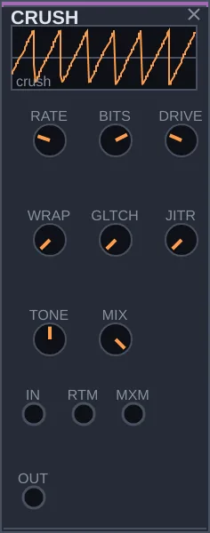
O que é
O CRUSH suja o som do jeito digital. Ele imita os defeitos dos primeiros samplers e videogames, e também os de uma conexão ruim: menos amostras por segundo, menos degraus de volume, números que estouram e voltam do outro lado, trechos que travam ou somem. O resultado vai de uma leve aspereza a uma voz de robô em pedaços.
Como pensar nele
O SHAPE distorce como um circuito analógico, arredondando e dobrando a onda. O CRUSH quebra o som em degraus. Cada controle é um tipo diferente de estrago, e você pode usar um só ou somar vários. As falhas são sorteadas, mas a partir da semente do patch, então o mesmo patch estraga o som sempre do mesmo jeito. Com um envelope na entrada MXM, a nota começa limpa e vai se degradando.
Controles
RATE: quantas vezes por segundo o som é lido, de 100 a 24000. Valores baixos deixam o som em escada e trazem notas fantasmas, aquele chiado metálico dos aparelhos de 8 bits.
BITS: quantos degraus de volume restam, de 1 a 16. Em 16 quase não se nota; em 1, tudo vira onda quadrada.
DRIVE: o ganho antes do estrago, que empurra o som para fora dos limites.
WRAP: o que acontece quando o som passa do limite. Em zero, ele é cortado; no máximo, reaparece do lado oposto, o que soa muito mais agressivo, sobretudo com DRIVE alto.
GLTCH: a chance de falha: um trecho que trava, um buraco de silêncio, um repique.
JITR: torna a leitura irregular, e a afinação oscila um pouco, como uma fita digital cansada.
TONE: um filtro simples na saída. Para a esquerda escurece; para a direita deixa só o chiado agudo; no meio não muda nada.
MIX: a mistura entre o som limpo e o estragado. Em zero, o som passa intacto.
Entradas: IN, o som; RTM, para modular RATE; MXM, para modular MIX.
Experimente
Ligue a saída SAW de um OSC na entrada IN, e OUT numa entrada do MIXER.
Baixe RATE até uns 4000 e BITS até 8. O som fica granulado.
Suba GLTCH aos poucos e ouça as falhas aparecerem.
Baixe MIX para zero e ligue a saída ENV de um ENVELOPE em MXM, com o CLOCK na entrada GATE do envelope. Cada nota começa limpa e se desfaz.
PARAMETRIC
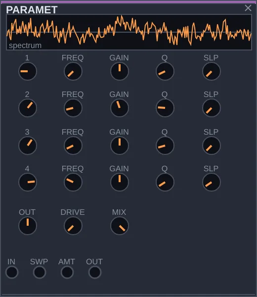
O que é
O PARAMETRIC é um equalizador de quatro faixas, a ferramenta de estúdio para acertar o timbre com precisão. Cada faixa pode cortar os graves ou os agudos, realçar ou abaixar uma região estreita, ou levantar ou baixar tudo acima ou abaixo de um ponto.
Como pensar nele
O FILTER é para tocar: ele ressoa, se move, chama atenção. O PARAMETRIC serve para os acertos que não devem ser notados: tirar um grave que embola, abaixar uma ressonância que incomoda, dar um pouco de brilho no fim da cadeia. Ele tem também um gesto próprio. A entrada SWP move as quatro faixas juntas, e o desenho inteiro do equalizador desliza pelo espectro sem mudar de forma.
Controles
1, 2, 3, 4: o tipo de cada faixa: desligada, corte de graves, prateleira de graves, realce, prateleira de agudos, corte de agudos. A prateleira sobe ou desce tudo de um lado da frequência escolhida; o realce age só em volta dela.
FREQ: a frequência em que cada faixa age, de 20 Hz a 20 kHz.
GAIN: quanto a faixa sobe ou desce, até 24 dB para cada lado. Vale para prateleiras e realces; os cortes não usam este controle.
Q: a largura do realce. Valores altos atingem uma região estreita, valores baixos uma região larga.
SLP: a inclinação dos cortes, de suave a muito íngreme.
OUT: o volume final, depois das quatro faixas.
DRIVE: uma saturação leve na saída.
MIX: a mistura entre o som original e o equalizado.
Entradas: IN, o som; SWP, para deslocar as quatro faixas juntas; AMT, para modular a intensidade.
Experimente
Ligue a saída OUT de um MATTER na entrada IN, e OUT do PARAMETRIC numa entrada do MIXER.
Na faixa 1, deixe o corte de graves e suba FREQ até o som perder o peso. Volte um pouco e ouça como pequenas mudanças já se percebem.
Na faixa 3, com o realce, suba GAIN e Q e mova FREQ devagar: você encontra as ressonâncias do som.
Ligue a saída BI de um FUNCTION bem lento em SWP. O timbre inteiro passeia, subindo e descendo.
GLIDE
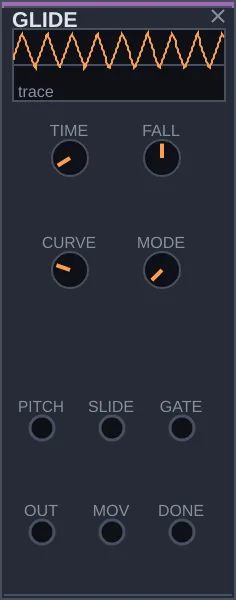
O que é
O GLIDE faz uma nota escorregar até a seguinte, em vez de saltar. Ele fica no caminho do sinal de altura, entre quem escolhe as notas, como SEQUENCE ou QUANTIZER, e o oscilador. Esse escorregão, chamado portamento, é o que dá o canto às linhas de baixo ácidas e aos solos ligados.
Como pensar nele
Um deslize sempre ligado cansa logo. O interessante é escolher quando escorregar, e o GLIDE decide isso nota por nota: pode deslizar sempre, só quando a entrada SLIDE está alta, ou só quando as notas estão ligadas, isto é, quando a nota nova chega antes de soltar a anterior. As saídas MOV e DONE avisam quando um deslize está acontecendo e quando ele termina, e podem disparar outras coisas.
Controles
TIME: quanto tempo leva para subir uma oitava, de zero, um salto seco, até dois segundos.
FALL: deixa a descida mais rápida ou mais lenta que a subida. No meio, as duas são iguais.
CURVE: o formato do deslize. Em zero, a velocidade é constante e a nota chega no tempo exato; no máximo, ela vai freando e demora mais para encostar.
MODE: quando deslizar: sempre; só com SLIDE alto, como no sintetizador de baixo TB-303; ou só entre notas ligadas, lendo a entrada GATE.
Entradas: PITCH, a altura que chega; SLIDE e GATE, que decidem quando deslizar. Saídas: OUT, a altura conduzida; MOV, alta durante o deslize; DONE, um pulso quando ele termina.
Experimente
Monte uma linha: a saída CLK do CLOCK na entrada CLK de uma SEQUENCE, e a saída SAW de um OSC no MIXER.
Ligue PTCH da SEQUENCE em PITCH do GLIDE, e OUT do GLIDE em 1V/O do OSC.
Suba TIME: as notas passam a escorregar umas nas outras.
Ponha MODE na terceira posição e ligue GATE da SEQUENCE em GATE do GLIDE. Agora só as notas ligadas escorregam.
CONTROL
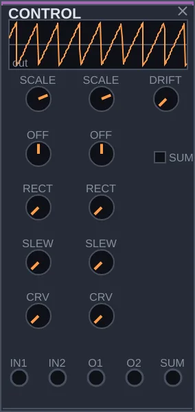
O que é
O CONTROL ajusta sinais de controle antes que cheguem ao destino. Ele pode diminuir, aumentar ou inverter um sinal, deslocá-lo para cima ou para baixo, suavizar seus degraus e somar dois sinais. São operações discretas, mas aparecem em quase todo patch que vai além do básico.
Como pensar nele
Às vezes uma modulação tem a forma certa e o tamanho errado, ou o sentido errado: um envelope que deveria fechar o filtro em vez de abri-lo, uma onda que deveria oscilar só acima de zero. O ganho do cabo diminui um sinal, mas não inverte nem desloca. O CONTROL faz tudo isso num painel, em dois canais iguais e uma saída que junta os dois. Com um som de verdade na entrada, ele também acompanha o volume desse som e o transforma em controle, o que se chama seguidor de envelope.
Controles
SCALE: o tamanho do sinal, em cada canal. Em 1 passa igual; em 0,5, pela metade; negativo, invertido. Em zero, sobra só o deslocamento de OFF, e o canal vira um controle manual.
OFF: um valor somado ao sinal, que o desloca para cima ou para baixo.
RECT: dobra para cima a parte negativa do sinal. No meio, a parte negativa some; no máximo, ela é espelhada.
SLEW: suaviza mudanças bruscas, em até dois segundos. Degraus viram rampas.
CRV: o formato dessa suavização, de rampa reta a curva que vai freando.
SUM: se a saída SUM soma os dois canais ou tira a média deles.
DRIFT: um passeio lento nos deslocamentos, que tira a rigidez de um valor parado.
Entradas: IN1 e IN2. Saídas: O1, O2 e SUM.
Experimente
Faça uma voz: SAW de um OSC na entrada IN de um FILTER, e LO do FILTER no MIXER. Baixe CUT.
Ligue a saída ENV de um ENVELOPE, tocado pelo CLOCK, em IN1 do CONTROL, e O1 na entrada FC do FILTER. Cada nota abre o filtro.
Leve SCALE do primeiro canal para −1 e suba CUT. Agora cada nota fecha o filtro.
Ligue a saída BI de um FUNCTION em IN2 e escute a saída SUM no lugar de O1: as duas modulações agem juntas.
DYNAMICS
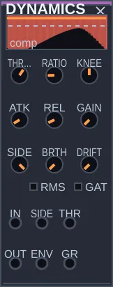
O que é
O DYNAMICS é um compressor. Ele segura os picos para o som ficar mais junto, e deixa um som abaixar outro, como o pad que respira quando o bumbo bate. Aqui ele faz uma terceira coisa: o que ele ouve e quanto ele abaixa saem como sinais de controle, para mover qualquer outro módulo.
Como pensar nele
Pense num técnico de som com a mão no fader: quando o som passa do limiar, ele abaixa; quando o som cai, ele devolve. RATIO é a força da mão, ATK e REL são a pressa dela. A entrada SIDE troca o que ele escuta: com um bumbo ali, é o bumbo que decide quando o resto abaixa. Dois desvios Rasgo mexem no tempo: BRTH faz a volta seguir o intervalo entre os golpes, e DRIFT varia ataque e volta a cada golpe.
Controles
THRES: o limiar, de −48 a 0 dB. Acima dele, o som é abaixado.
RATIO: quanto abaixa. Com 4, cada 4 dB acima do limiar viram 1; com 20, vira um limitador.
KNEE: de uma vez (0) ou aos poucos (até 12 dB).
ATK, REL: o tempo de descer (0,1 a 200 ms) e o de voltar (5 ms a 2 s).
GAIN: devolve o nível perdido, até 24 dB.
SIDE: o detector ouve a entrada IN (0) ou a entrada SIDE (1).
RMS: mede a energia média em vez do pico; soa mais suave.
GATE: inverte a curva e vira um noise gate, que fecha o que fica abaixo do limiar.
BRTH: a volta acompanha o andamento dos golpes que ele ouve.
DRIFT: um acaso semeado no ataque e na volta, golpe a golpe.
Entradas: IN recebe o som, SIDE o que o detector deve ouvir, THR move o limiar. Saídas: OUT é o som comprimido, ENV o nível que ele ouve, GR quanto ele abaixa agora.
Experimente
Ligue um TRIGSEQ num DRUM e o DRUM na entrada SIDE. Ligue um CHORD em IN e OUT no MIXER.
Deixe SIDE em 1, RATIO em 6, ATK curto e REL perto de 200 ms: o acorde abaixa a cada bumbo.
Suba BRTH: a volta passa a respirar no ritmo.
Ligue a saída ENV no CUT de um FILTER noutro som: o filtro abre com a força do que o compressor ouve.
MODULATE 13 módulos
ENVELOPE
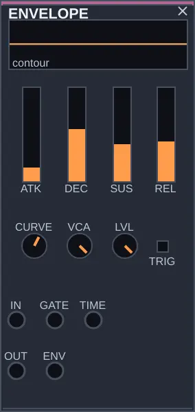
O que é
O ENVELOPE dá forma a uma nota no tempo: como ela começa, como cai, quanto se sustenta e como some. Ele recebe um pulso na entrada GATE e desenha uma curva a cada pulso. Já traz um controle de volume embutido, então basta passar um som por ele para ouvir notas no lugar de um som contínuo.
Como pensar nele
As fontes soam o tempo todo; o ENVELOPE transforma esse fluxo em frases. Ele tem dois usos que podem acontecer ao mesmo tempo. Pela entrada IN e saída OUT, ele articula o som que passa. Pela saída ENV, ele entrega a curva em si, que você pode mandar para abrir um filtro, mudar um timbre ou dosar um efeito. As quatro etapas da curva têm nomes em inglês que aparecem em todo sintetizador: attack, decay, sustain e release, por isso ADSR.
Controles
Na interface 0.1.7, ATK, DEC, SUS e REL são sliders verticais: arraste para cima para aumentar. Os três tempos usam uma escala logarítmica de 1 ms a 10 s; SUS continua sendo um nível linear. CURVE, VCA e LVL ficam abaixo. Os parâmetros e os patches salvos mantêm os mesmos valores da interface anterior.
ATK: o ataque, o tempo que a nota leva para chegar ao máximo depois do pulso. Curto soa percussivo; longo, como um arco que entra devagar.
DEC: o decaimento, o tempo da queda depois do máximo até o nível de SUS.
SUS: o nível em que a nota se sustenta enquanto o pulso continua alto. Em zero, não há sustentação e a nota soa como algo dedilhado.
REL: o tempo que a nota leva para sumir depois que o pulso termina.
CURVE: o formato das curvas, de mais suave a mais incisivo, com o ataque percebido mais cedo.
TRIG: em uma posição, a nota se sustenta enquanto o pulso durar; na outra, cada pulso dispara a curva inteira, sem esperar.
VCA: quanto o volume embutido age sobre o som que passa. Em zero, o som atravessa sem mudar e só a saída ENV importa.
LVL: o volume de saída.
LOOP: o envelope recomeça sozinho ao terminar e vira um ciclo que toca sem gate. Em LOOP, SUS deixa de segurar e passa a ser o nível em que a queda termina e a soltura começa.
Entradas: IN, o som; GATE, o pulso que dispara a nota; TIME, para acelerar ou retardar todas as etapas. Saídas: OUT, o som articulado; ENV, a curva. A saída EOC dá um pulso curto no fim de cada envelope, ou de cada ciclo em LOOP.
Experimente
Ligue a saída SAW de um OSC na entrada IN, OUT numa entrada do MIXER, e a saída EUC do CLOCK em GATE. Você ouve notas.
Suba ATK e ouça cada nota entrar devagar. Volte e mexa em DEC para deixá-las curtas ou longas.
Ponha um FILTER entre o OSC e o ENVELOPE, com CUT baixo, e ligue ENV na entrada FC do filtro. Agora cada nota também abre o timbre.
FUNCTION
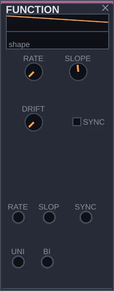
O que é
O FUNCTION gera uma rampa que sobe e desce sem parar. Devagar, ela serve para mover outros controles, o que se chama LFO, oscilador de baixa frequência; rápido, vira um som audível; disparada por um pulso, funciona como um envelope simples. É a fonte de movimento mais usada do Rasgo Modular.
Como pensar nele
Envelope, LFO e oscilador são a mesma coisa em velocidades diferentes, e o FUNCTION cobre todas, de um ciclo a cada cem segundos a milhares por segundo. Quando um guia diz para ligar um LFO em algum lugar, quase sempre é um FUNCTION lento. A forma vai de uma rampa que cai a uma que sobe, passando pelo triângulo, e as duas saídas entregam a mesma forma em escalas diferentes: UNI só acima de zero, BI acima e abaixo.
Controles
RATE: a velocidade, de 0,01 a 12000 ciclos por segundo.
SLOPE: a forma. Num extremo, sobe de repente e desce devagar; no meio, triângulo; no outro extremo, sobe devagar e cai de repente.
DRIFT: varia a velocidade aos poucos, para que o movimento não soe como um metrônomo.
SYNC: liga a entrada SYNC, para que cada pulso recomece a rampa.
Entradas: RATE e SLOPE, para modular os controles; SYNC, o pulso que recomeça. Saídas: UNI e BI.
Experimente
Faça uma voz: SAW de um OSC na entrada IN de um FILTER, LO do FILTER no MIXER. Baixe CUT.
Ligue BI do FUNCTION na entrada FC do FILTER, com RATE baixo. O timbre abre e fecha devagar.
Suba RATE até uns 5 Hz e ligue BI na entrada FM do OSC, com o FM do OSC bem baixo. A afinação treme, num vibrato.
Suba RATE até a faixa audível e ligue BI direto no MIXER: o próprio FUNCTION vira som.
STAGES
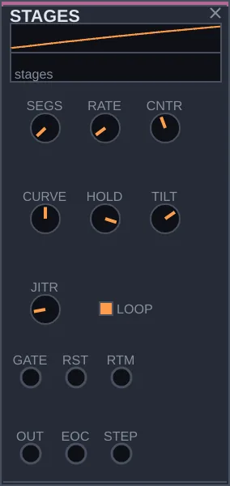
O que é
O STAGES desenha uma curva feita de vários trechos encadeados, de dois a oito. Conforme os ajustes, essa curva vira um envelope com várias etapas, um movimento lento que não se repete exatamente, uma sequência de valores em degraus, ou até um som de forma estranha.
Como pensar nele
O FUNCTION faz uma rampa só, e o ENVELOPE, as quatro etapas de sempre. O STAGES faz formas compostas, e você não desenha ponto por ponto: alguns controles moldam o desenho inteiro de uma vez. O controle que mais muda o caráter é HOLD. Com ele em zero, os trechos são rampas e o resultado é um movimento contínuo; no máximo, cada trecho salta e se mantém, e o STAGES passa a funcionar como um sequenciador. Com LOOP ligado, a forma se repete sozinha; desligado, ela corre uma vez a cada pulso em GATE.
Controles
SEGS: quantos trechos a forma tem, de 2 a 8.
RATE: a velocidade de uma volta completa, quando LOOP está ligado.
CNTR: o desenho dos níveis: uma escada que sobe, um arco, ou uma escada que desce.
CURVE: como cada trecho vai de um nível ao outro: começando rápido, em linha reta, ou começando devagar.
HOLD: em zero, rampas suaves; no máximo, degraus que saltam e seguram.
TILT: deixa os primeiros trechos mais longos que os últimos, ou o contrário.
JITR: faz níveis e durações variarem de leve a cada volta, sempre igual para a mesma semente.
LOOP: ligado, a forma se repete; desligado, corre uma vez a cada pulso.
Entradas: GATE, o pulso que dispara; RST, para voltar ao começo; RTM, para modular a velocidade. Saídas: OUT, a curva; EOC, um pulso no fim de cada volta; STEP, um pulso a cada trecho.
Experimente
Faça uma voz: SAW de um OSC na entrada IN de um FILTER, LO do FILTER no MIXER. Baixe CUT.
Ligue OUT do STAGES na entrada FC do FILTER, com SEGS em 6. O timbre passeia numa forma que vai e volta.
Mova CNTR e TILT e ouça o desenho mudar.
Leve HOLD ao máximo e SEGS a 8. Ligue OUT na entrada CV de um QUANTIZER e PTCH do QUANTIZER em 1V/O do OSC: o STAGES agora toca uma melodia.
DRIFT
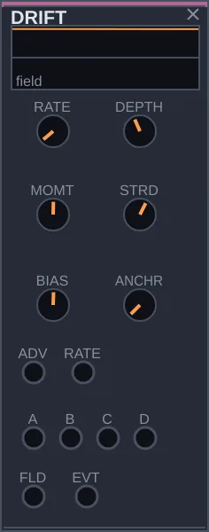
O que é
O DRIFT produz movimentos muito lentos, na escala dos minutos. Ligado a alguns controles de um patch, ele faz a música mudar aos poucos por conta própria: o timbre aos trinta segundos é outro aos quatro minutos, sem saltos e sem voltar ao mesmo ponto.
Como pensar nele
Um patch sem ninguém mexendo tende a andar em círculos depois de um tempo. O DRIFT é a camada de desenvolvimento lento. Por dentro existe um único valor passeando, e as quatro saídas A, B, C e D são versões desse mesmo passeio, cada uma com seu peso. Por isso elas contam a mesma história de ângulos diferentes: quando uma sobe, as outras tendem a subir também. O passeio também tem inércia: quando ganha uma direção, tende a mantê-la por um tempo.
Controles
RATE: o ritmo do passeio, de um passo por segundo a um a cada oito minutos, mais ou menos.
DEPTH: o alcance, quanto o passeio pode se afastar do ponto de repouso.
MOMT: a inércia. Alto, o caminho é suave e insiste numa direção; baixo, muda de rumo a todo momento.
STRD: em zero, as quatro saídas andam quase juntas; no máximo, cada uma vai para um lado.
ANCHR: a memória. Em zero, o passeio nunca volta; alto, ele tende a retornar a lugares por onde já passou, o que dá à peça algo como temas que reaparecem.
BIAS: desloca o ponto de repouso para cima ou para baixo.
RESID: o resíduo. A volta ao marco nunca é idêntica: cada volta desloca um pouco o campo.
ELAST: como o campo volta ao repouso: mola (o de sempre), borracha (livre perto do centro, puxão forte nas bordas) ou plástico (sem volta: o repouso anda para onde o campo se demora).
Entradas: ADV, um pulso que força um passo; RATE, para modular a velocidade. Saídas: A, B, C e D, os quatro aspectos do passeio; FLD, o passeio sem pesos; EVT, um pulso a cada passo. A entrada CAPT guarda agora o marco, o lugar a que a deriva volta.
Experimente
Monte uma voz qualquer que passe por um FILTER e por um SPACE antes do MIXER.
Ligue A na entrada FC do FILTER e B na entrada FBK do SPACE. Suba DEPTH.
Deixe tocar alguns minutos. O timbre e o espaço vão mudando juntos, sem pressa.
Para acompanhar a forma da música, ligue a saída EOS de uma SEQUENCE em ADV: o passeio dá um passo a cada fim de frase.
CHAOS
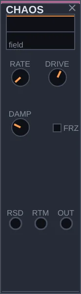
O que é
O CHAOS gera um movimento imprevisível a partir de um sistema físico simulado: algo como uma bola que rola entre dois vales, ora se acomodando num deles, ora pulando para o outro. Você não consegue prever quando ela vai pular, mas com a mesma semente tudo se repete do mesmo jeito.
Como pensar nele
Outros módulos sorteiam valores, como o TURING e o DECISION, ou passeiam devagar, como o DRIFT. O CHAOS tem um comportamento próprio: passa um tempo rondando uma região e de repente muda para outra. Num filtro, isso dá um timbre que hesita e depois salta; numa melodia, frases que ficam numa região e se mudam de repente. Em velocidades altas, ele mesmo vira uma textura sonora.
Controles
RATE: a velocidade do movimento, de 0,02 a 400 ciclos por segundo. Lento para mover controles; rápido para ouvir direto.
DRIVE: a força que empurra a bola entre os vales. Mais alto, saltos maiores e mais frequentes.
DAMP: o atrito. Alto, a bola assenta num vale e quase para; baixo, ela oscila muito e pula de um lado para o outro.
FRZ: congela o movimento no valor atual.
MODO: o atrator. Poço duplo (o de sempre), Rössler, que com DRIVE percorre a rota de duplicação de período até o caos, ou Aizawa, uma esfera atravessada por um tubo.
Entradas: RSD, um pulso que dá um empurrão novo; RTM, para modular a velocidade. Saída: OUT. As saídas Y e Z dão as outras coordenadas do atrator.
Experimente
Faça uma voz: SAW de um OSC na entrada IN de um FILTER, LO do FILTER no MIXER.
Ligue OUT do CHAOS na entrada FC do FILTER. Ponha RATE em torno de 0,3, DRIVE alto e DAMP baixo.
Ouça o timbre ficar um tempo numa região e saltar para outra.
Ligue OUT do CHAOS também na entrada CV de um QUANTIZER, e PTCH dele em 1V/O do OSC. Agora a melodia muda de região junto com o timbre.
SH
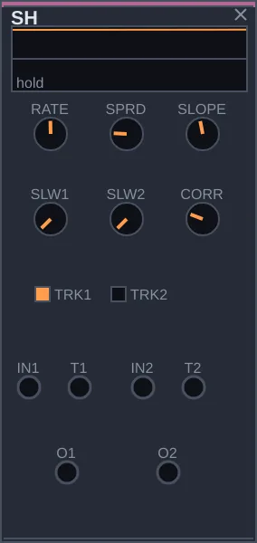
O que é
O SH, de sample and hold, captura o valor de um sinal no instante de um pulso e o segura até o pulso seguinte. Com nada na entrada, ele sorteia um valor novo a cada pulso. É o jeito tradicional de transformar acaso em degraus: cada pulso, uma nota nova, um timbre novo. O SH tem dois canais.
Como pensar nele
Dois sorteios independentes não têm nada a ver um com o outro, e às vezes é isso que se quer. Mas muitas vezes uma melodia soa melhor quando o timbre acompanha a nota, sem copiá-la. O controle CORR faz justamente essa relação entre os dois canais: de espelhados, um sobe quando o outro desce, a independentes, a gêmeos, que sorteiam o mesmo valor. Os controles de deslize transformam os degraus em escorregões.
Controles
RATE: o ritmo interno de sorteio, de 0,02 a 40 vezes por segundo. Só vale para o canal sem pulso ligado em T1 ou T2.
SLW1, SLW2: o tempo que cada canal leva para escorregar até o valor novo. Em zero, salta na hora.
SLOPE: deixa a subida mais rápida que a descida, ou o contrário.
TRK1, TRK2: em vez de capturar só no instante do pulso, o canal acompanha a entrada enquanto o pulso estiver alto e segura quando ele cai.
SPRD: muda o jeito do sorteio, tornando as variações pequenas mais frequentes que as grandes.
CORR: a relação entre os sorteios dos dois canais: espelhados, independentes ou iguais. Só vale para os canais sem nada ligado na entrada.
Entradas: IN1 e IN2, os sinais a capturar; T1 e T2, os pulsos. Saídas: O1 e O2.
Experimente
Faça uma voz: SAW de um OSC na entrada IN de um FILTER, LO do FILTER no MIXER.
Ligue a saída CLK do CLOCK em T1 e em T2.
Ligue O1 na entrada CV de um QUANTIZER, PTCH do QUANTIZER em 1V/O do OSC, e O2 na entrada FC do FILTER. Cada pulso traz uma nota e um timbre.
Gire CORR de um extremo ao outro. Num lado, notas agudas vêm escuras; no meio, sem relação; no outro, notas agudas vêm brilhantes.
BOUNCE
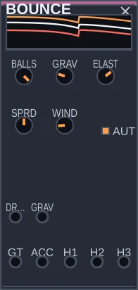
O que é
O BOUNCE solta bolas que quicam, cada vez mais baixo e mais rápido, até parar. São até três bolas. Cada quique é um gate, a força do quique é um acento, e a altura de cada bola é uma CV que sobe e desce.
Como pensar nele
É um ritmo que acelera sozinho, como uma bola de pingue-pongue largada na mesa. ELAST decide quanto a bola devolve a cada quique, GRAV é a pressa. Com AUTO, as bolas que param são relançadas, e WIND as empurra de leve, então o módulo toca para sempre sem se repetir.
Controles
BALLS: quantas bolas, de 1 a 3.
GRAV: a gravidade. Mais alta, quiques mais rápidos.
ELAST: quanto cada quique devolve. Perto de 1, a bola demora a parar.
SPRD: o quanto as bolas são soltas de alturas diferentes.
WIND: um vento leve que impede repetições exatas.
AUTO: relança as bolas que pararam.
Entradas: DROP solta as bolas de novo, GRAV move a gravidade por CV. Saídas: GT é o gate de cada quique, ACC a força do quique, H1, H2 e H3 a altura de cada bola.
Experimente
Ligue GT num DRUM e o DRUM no MIXER: ouça o quique acelerar até parar.
Ligue ACC no nível do DRUM: os primeiros quiques soam mais fortes.
Ligue H1 num QUANTIZER e o QUANTIZER num OSC: uma melodia que cai.
Ligue GT no CLK de um ARP: o arpejo acelera junto com a bola.
MOUSSE
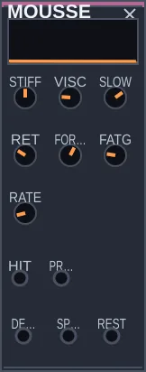
O que é
O MOUSSE é uma espuma. Aperte, e parte dela afunda na hora e parte escorre devagar; solte, e ela volta sem pressa. A saída DEPTH é o quanto ela está afundada: um envelope que não é feito de retas, mas de matéria.
Como pensar nele
Um envelope comum sobe e desce por linhas. A espuma tem memória: golpes seguidos a afundam mais, e com FATG ela amolece com o uso. STIFF é a dureza, SLOW o quanto ela é fluida, RET quantas vezes a volta é mais lenta que a descida. Sem nada em HIT, ela é tocada sozinha no ritmo de RATE.
Controles
STIFF: a dureza. Dura, afunda pouco e volta rápido.
VISC: a viscosidade, o tempo de escorrer, de 0,05 a 8 s.
SLOW: quanto do afundamento é lento em vez de imediato.
RET: quantas vezes a volta é mais lenta, de 1 a 8.
FORCE: a força de cada golpe.
FATG: a fadiga; golpes seguidos amolecem a espuma.
RATE: o ritmo dos golpes internos, quando nada está ligado em HIT.
Entradas: HIT dá um golpe, PRESS apoia a mão com força contínua. Saídas: DEPTH é o afundamento, SPEED a velocidade dele, REST um gate quando a espuma descansa.
Experimente
Ligue um DRUM em HIT e DEPTH no CUT de um FILTER, com o cabo atenuado e invertido: cada golpe escurece e o brilho volta devagar.
Suba FATG e toque golpes seguidos: a espuma vai cedendo.
Ligue a saída ENV do DYNAMICS em PRESS: a própria mistura empurra a espuma.
Ligue REST no gate de um ENVELOPE: um som só quando a espuma descansa.
PENDULUM
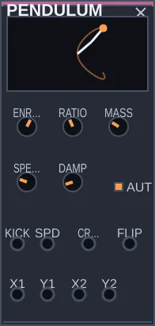
O que é
O PENDULUM é um pêndulo duplo: um pêndulo com outro pendurado na ponta. Com pouca energia, ele balança quase como um relógio; com muita, o braço de baixo dá voltas e o movimento nunca se repete. As posições das duas pontas saem como CV.
Como pensar nele
É o exemplo clássico de caos: uma lei simples, um resultado imprevisível. ENRGY é o botão do caos. Embaixo, ordem; em cima, voltas. CROSS marca o ritmo do balanço, e FLIP marca cada volta inteira, o instante em que o caos aparece.
Controles
ENRGY: a energia do balanço; acima da metade, o caos aparece.
RATIO: a razão entre os comprimentos dos dois braços.
MASS: a razão entre as massas.
SPEED: a velocidade do tempo do pêndulo.
DAMP: o atrito; com ele, o pêndulo vai perdendo força.
AUTO: dá um empurrão quando o pêndulo quase para.
Entradas: KICK dá um empurrão, SPD move a velocidade por CV. Saídas: X1 e Y1 são a ponta do primeiro braço, X2 e Y2 a do segundo, CROSS um gate a cada passagem pelo centro, FLIP um gate a cada volta inteira.
Experimente
Ligue X2 num QUANTIZER e o QUANTIZER num OSC, e CROSS num ENVELOPE que controla o VCA da voz: uma melodia que balança.
Suba ENRGY devagar e ouça a melodia passar de regular a imprevisível.
Ligue FLIP no ADV do HARMONY: o acorde muda quando o caos aparece.
Ligue X1 no pan de um canal do MIXER: o som gira no espaço.
EPICYCLE
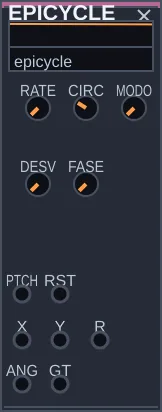
O que é
O EPICYCLE desenha com círculos: até oito, cada um girando na borda do anterior. A ponta do último traça uma figura, e as coordenadas dela saem como sinais. É uma série de Fourier desenhada, a mesma ideia dos epiciclos de Ptolomeu.
Como pensar nele
A mesma máquina serve a duas escalas. Com poucos círculos e RATE lento, ela é gesto e ritmo: uma figura que volta. Com muitos círculos e a altura de uma nota em PTCH, ela gira na velocidade do som e vira timbre. MODO escolhe a família de figuras, e DESV desafina as velocidades para que a figura nunca feche.
Controles
RATE: a velocidade do primeiro círculo, de 0,01 Hz a 2 kHz.
CIRC: quantos círculos, de 1 a 8.
MODO: quadrada (velocidades ímpares), serra (todas as velocidades), raios de Fibonacci ou velocidades de Fibonacci.
DESV: o desvio das velocidades; acima de 0, a figura nunca se fecha.
FASE: a fase de partida dos círculos.
Entradas: PTCH recebe a altura em 1 volt por oitava, para o modo de timbre; RST recomeça a figura. Saídas: X e Y são as coordenadas da ponta, R a distância ao centro, ANG o ângulo, GT um pulso quando Y cruza o zero subindo.
Experimente
Com RATE em 0,2 Hz e CIRC em 3, ligue X no corte de um FILTER e Y no pan de um canal do MIXER: o som desenha uma figura no espaço.
Ligue GT num ENVELOPE: a figura vira ritmo.
Ligue X no MIXER, ponha CIRC em 8 e ligue a altura de um QUANTIZER em PTCH: agora a figura é um timbre.
Troque MODO e suba DESV devagar: o timbre se abre e não volta ao mesmo lugar.
SUPPLY
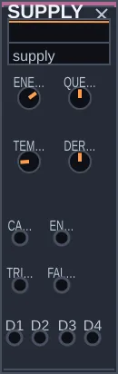
O que é
O SUPPLY é a alimentação do patch, posta num módulo com cabos. Num circuito, quando a bateria enfraquece, tudo muda junto: o relógio desacelera, o som perde corpo e os osciladores desafinam uns dos outros. O SUPPLY traz essa causa comum para o patch.
Como pensar nele
ENERG é a tensão de alimentação. A carga, o som do próprio patch, faz essa tensão ceder, como uma bateria sob esforço: quanto mais o patch soa, mais o trilho afunda. O que sobra sai em TRILHO, para ligar onde você quiser. As derivas D1 a D4 só aparecem com o trilho baixo e fazem as vozes se desencontrarem; com o trilho cheio, elas voltam juntas. Nada é invisível: o SUPPLY só age onde há cabo.
Controles
ENERG: a tensão de alimentação.
QUEDA: o quanto a carga faz o trilho ceder.
TEMPO: a demora do trilho para ceder e voltar, de 0,05 a 5 s.
DERIVA: o quanto as vozes se desencontram com o trilho baixo.
Entradas: CARGA recebe o som do patch, ENERG move a tensão por CV. Saídas: TRILHO é a tensão que sobra, D1 a D4 quatro derivas de afinação (até 60 cents), FALHA um pulso no apagão e outro na volta.
Experimente
Ligue a saída do MIXER em CARGA e TRILHO no CV1 do VCA de uma voz: o patch perde corpo quando soa forte.
Ligue D1 no 1V/O de um OSC e D2 no de outro. Baixe ENERG: as vozes se desafinam uma da outra.
Suba ENERG de novo: elas voltam juntas.
Ligue FALHA no CIT do APOCRIFO: o apagão rasga o tempo.
MAGNET
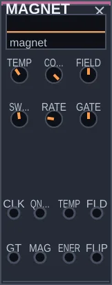
O que é
O MAGNET é uma grade de 8 por 8 pequenos ímãs, cada um apontando para cima ou para baixo. Cada ímã quer se alinhar com os vizinhos, e a temperatura os agita. Uma cabeça anda pela grade, uma casa por pulso, e o ímã sob ela dá o gate.
Como pensar nele
É o modelo de Ising, da física dos materiais. Abaixo da temperatura crítica (perto de 2,27), formam-se domínios grandes e o ritmo fica estável. Acima, o ruído vence. Perto dela, domínios de todos os tamanhos aparecem e somem: é a borda do caos, e é ali que o módulo soa mais vivo. COUPL negativo faz os ímãs se oporem aos vizinhos, como um tabuleiro de xadrez.
Controles
TEMP: a temperatura; a transição fica perto de 2,27.
COUPL: o acoplamento. Positivo, os ímãs se alinham; negativo, se opõem.
FIELD: um ímã externo que empurra a grade inteira para um lado.
SWEEP: quantas tentativas de virar ímãs há a cada pulso.
RATE: o relógio interno, quando nada está ligado em CLK.
GATE: a duração de cada gate.
Entradas: CLK avança um pulso, QNCH esquenta tudo de uma vez e a grade volta a se organizar, TEMP e FLD movem temperatura e campo por CV. Saídas: GT é o gate da cabeça, MAG a magnetização, ENER a energia da grade, FLIP quanto da grade virou neste pulso.
Experimente
Ligue GT num DRUM. Com TEMP em 1, ouça um ritmo quase parado; em 4, um ritmo de ruído.
Ponha TEMP perto de 2,3: domínios aparecem e somem, e o ritmo respira.
Ligue um gatilho raro em QNCH: a grade se desfaz e se reorganiza.
Ligue MAG no corte de um FILTER: o timbre segue para que lado a grade pende.
ORBIT
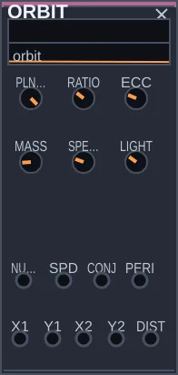
O que é
O ORBIT é um pequeno sistema solar: um sol no centro e dois ou três planetas em gravidade. As posições dos planetas saem como CV, e os encontros entre eles saem como pulsos.
Como pensar nele
São as leis de Newton e de Kepler tocando o patch. Órbitas mais afastadas demoram mais, então os planetas andam em ritmos que quase se alinham e se desencontram. MASS faz os planetas se puxarem uns aos outros: baixa, as órbitas são regulares; alta, elas se desfazem em caos. Um planeta que escapa volta à sua órbita, então o sistema nunca se perde. LIGHT atrasa o pulso de conjunção pela distância, como a luz que demora a chegar.
Controles
PLNTS: quantos planetas, 2 ou 3.
RATIO: o quanto as órbitas se afastam umas das outras.
ECC: o achatamento das elipses.
MASS: o quanto os planetas se puxam entre si.
SPEED: a velocidade do tempo do sistema.
LIGHT: o atraso da conjunção pela distância, até cerca de 1 s.
Entradas: NUDGE empurra o primeiro planeta e muda a forma da órbita, SPD move a velocidade por CV. Saídas: X1 e Y1 são a posição do primeiro planeta, X2 e Y2 a do segundo, DIST a distância entre eles, CONJ um pulso na conjunção, PERI um pulso quando o primeiro planeta passa mais perto do sol.
Experimente
Ligue CONJ num DRUM e PERI noutro: dois ritmos lentos que quase se repetem.
Ligue X1 num QUANTIZER e o QUANTIZER num OSC: uma melodia em órbita.
Suba MASS devagar: as órbitas se desfazem e o ritmo fica imprevisível.
Ligue DIST no MIX de um SPACE: quando os planetas se afastam, o espaço se abre.
TIME 10 módulos
CLOCK
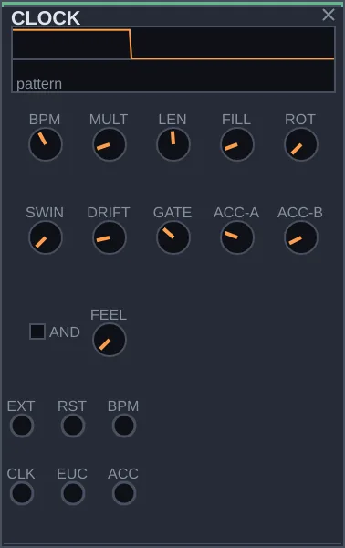
O que é
O CLOCK é o relógio do patch. Ele emite pulsos regulares no andamento que você escolher e, a partir deles, cria ritmos e acentos. Quase todo patch começa por ele: os pulsos fazem a sequência avançar, disparam os envelopes e tocam a percussão.
Como pensar nele
Em vez de programar batida por batida, você descreve o ritmo com dois números. LEN diz quantos passos tem o ciclo, FILL diz quantos deles tocam, e o CLOCK espalha esses toques da forma mais uniforme possível. Esse método, chamado ritmo euclidiano, reproduz muitos padrões tradicionais do mundo inteiro: 3 em 8 dá o tresillo cubano, 5 em 8, o cinquillo. A saída CLK pulsa em todos os passos; EUC só nos passos escolhidos; ACC marca os acentos.
Controles
BPM: o andamento, de 20 a 300 batidas por minuto.
MULT: quantos passos cabem numa batida.
LEN: o tamanho do ciclo, de 1 a 32 passos.
FILL: quantos passos do ciclo tocam na saída EUC. Poucos deixam o ritmo esparso; perto de LEN, quase contínuo.
ROT: gira o padrão, começando de outro ponto. A densidade é a mesma, mas a sensação muda.
SWING: atrasa um passo a cada dois, dando balanço.
DRIFT: deixa o andamento variar de leve, como um baterista que acelera e recua.
GATE: quanto tempo cada pulso fica ligado, dentro do passo.
ACC-A, ACC-B: os acentos caem nos passos múltiplos destes números. Com 4 e 3, por exemplo, os acentos formam um padrão de três contra quatro.
AND: decide se o acento precisa dos dois números ao mesmo tempo ou basta um deles.
FEEL: em quantas partes cada batida se divide: em dois, em três (tercinas), em cinco, sete, nove, onze, ou numa divisão sorteada a cada passo.
PHAS: o phasing de Steve Reich. A saída FASE é um segundo relógio um pouco mais rápido, até 3 %, que se afasta do principal e volta a coincidir.
Entradas: EXT, para seguir pulsos de fora; RST, para voltar ao começo; BPM, para modular o andamento. Saídas: CLK, EUC e ACC. A saída MET dá a força métrica do passo atual: 1 no primeiro passo do ciclo, menos nos tempos fracos.
Experimente
Ligue EUC na entrada GATE de um DRUM, e OUT do DRUM numa entrada do MIXER.
Ponha LEN em 8 e mova FILL de 1 a 8. Em 3 e em 5 você ouve padrões conhecidos.
Gire ROT e ouça o mesmo padrão começar de outro lugar.
Ligue ACC na entrada ACC do DRUM e mude ACC-A e ACC-B para ouvir os acentos se deslocarem.
LOGIC
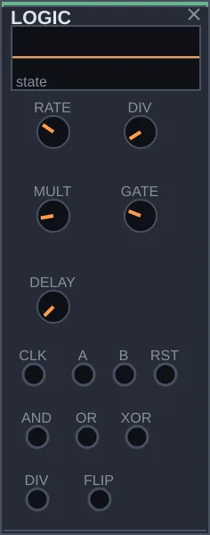
O que é
O LOGIC combina e transforma ritmos. Ele divide um pulso para criar ritmos mais lentos, compara dois ritmos para gerar um terceiro e alterna um estado a cada pulso. São operações simples, das que se usam em circuitos digitais, aplicadas ao tempo musical.
Como pensar nele
Um ritmo interessante raramente é um pulso reto. Costuma ser a relação entre dois: um que toca na metade da velocidade, um que só toca quando outro também toca, um que toca quando um ou outro toca mas nunca os dois juntos. O LOGIC fica entre as fontes de pulsos, como CLOCK, TURING e SEQUENCE, e os módulos que eles disparam. Sem nada na entrada CLK, ele usa um relógio próprio.
Controles
RATE: o relógio interno, usado quando nada chega em CLK.
DIV: divide o pulso. Em 2, a saída DIV pulsa uma vez a cada dois pulsos; em 3, uma a cada três.
MULT: acrescenta pulsos intermediários dentro de cada período.
GATE: quanto tempo o pulso da saída DIV fica ligado.
DELAY: atrasa o pulso da saída DIV em até 200 milissegundos.
Entradas: CLK, o pulso a dividir; A e B, os dois ritmos a comparar; RST, para zerar. Saídas: DIV, o pulso dividido; AND, quando A e B estão ligados juntos; OR, quando um ou outro está; XOR, quando só um deles está; FLIP, que muda de estado a cada pulso em A.
Experimente
Ligue a saída CLK do CLOCK na entrada CLK do LOGIC e DIV na entrada GATE de um DRUM ligado ao MIXER. Mude DIV para ouvir o pulso ficar mais lento.
Ligue EUC do CLOCK em A, e PLS de um TURING em B.
Leve a percussão para a saída XOR e depois para AND. Ouça como cada combinação gera um ritmo diferente a partir dos mesmos dois.
TURING
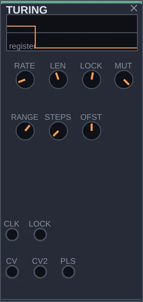
O que é
O TURING inventa melodias por acaso e deixa você guardar as que agradam. Ele mantém um laço de alguns valores que gira a cada pulso; a cada volta, cada valor pode se manter ou ser trocado por outro. Com o controle LOCK você decide quanto o laço muda, de acaso total a repetição fixa.
Como pensar nele
Aqui você compõe escolhendo pelo ouvido, não escrevendo nota por nota. Deixe LOCK no meio, ouça a melodia se transformar e, quando surgir algo bom, gire LOCK até o fim: o laço trava e se repete. Para variar de novo, solte um pouco. O nome homenageia o módulo Turing Machine, da Music Thing Modular, que popularizou essa ideia. A SEQUENCE toca uma frase escrita; o TURING faz frases nascerem e se fixarem.
Controles
RATE: o relógio interno, usado quando nada chega em CLK.
LEN: o tamanho do laço, de 2 a 16 passos.
LOCK: a chance de o laço se manter. Em zero, tudo é sorteado de novo; no máximo, a frase trava e se repete.
MUT: quando um valor muda, o quanto muda. Baixo, pequenas variações do que já estava; alto, um sorteio novo.
RANGE: a extensão dos valores de saída, ou seja, o tamanho dos saltos da melodia.
STEPS: divide a saída em degraus. Em 1, os valores são contínuos.
OFST: o centro dos valores, que sobe ou desce a região da melodia.
Entradas: CLK, o pulso que faz o laço girar; LOCK, para modular o travamento. Saídas: CV, a melodia; CV2, outra leitura do mesmo laço, aparentada mas diferente; PLS, um ritmo tirado do mesmo laço.
Experimente
Ligue a saída CLK do CLOCK na entrada CLK do TURING.
Ligue CV na entrada CV de um QUANTIZER, e PTCH do QUANTIZER em 1V/O de um OSC passando por um ENVELOPE até o MIXER. Ligue PLS na entrada GATE do envelope.
Com LOCK no meio, ouça a melodia mudar aos poucos.
Quando gostar do que ouviu, leve LOCK ao máximo. A frase fica.
SEQUENCE
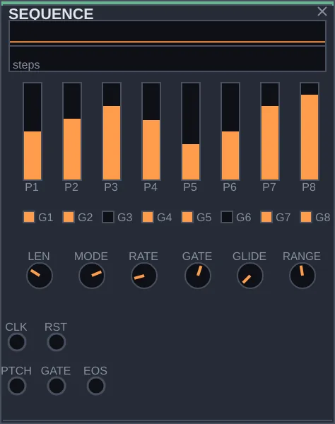
O que é
A SEQUENCE toca uma frase curta que você escreve: até oito notas, cada uma com sua altura, cada uma ligada ou em silêncio. A cada pulso na entrada CLK ela avança um passo, entregando a altura na saída PTCH e o pulso da nota na saída GATE. Serve para uma linha de baixo, um riff, uma figura que se repete.
Como pensar nele
O TURING faz a frase nascer do acaso; a SEQUENCE parte de uma frase que você decide. A variação vem do jeito de ler: para a frente, de trás para a frente, indo e voltando, em ordem sorteada, ou vagando de um passo para o vizinho. A mesma frase de oito notas rende muita coisa mudando só MODE e LEN. Para que as alturas caiam nas notas de uma escala, passe PTCH por um QUANTIZER antes do oscilador.
Controles
LEN: quantos dos oito passos entram na frase.
MODE: a ordem de leitura: para a frente, para trás, ida e volta, sorteada, vagando passo a passo, ou o cursor, um corpo que anda pelos passos empurrado pelo relógio e atraído ou repelido por um alvo.
RATE: o relógio interno, usado quando nada chega em CLK.
GATE: quanto tempo cada nota fica ligada dentro do passo. Curto soa destacado; longo, ligado.
GLIDE: faz a altura escorregar de uma nota à seguinte.
RANGE: quantas oitavas os oito valores cobrem, até duas.
P1 a P8: a altura de cada passo.
G1 a G8: liga ou silencia cada passo.
INERC: no modo cursor, o quanto o cursor guarda a velocidade de um pulso a outro.
FORCA: no modo cursor, a força na direção do ALVO: positiva atrai, e o cursor se demora perto dele; negativa repele.
ALVO: o passo que atrai ou repele o cursor.
FADIG: a fadiga. Cada passo que toca se cansa e, cansado demais, cala nessa vez: a repetição se gasta. Vale em qualquer modo.
Entradas: CLK, o pulso que avança; RST, para voltar ao primeiro passo. Saídas: PTCH, a altura; GATE, o pulso da nota; EOS, um pulso a cada fim de frase.
Experimente
Ligue a saída CLK do CLOCK em CLK da SEQUENCE.
Ligue PTCH na entrada CV de um QUANTIZER, e PTCH do QUANTIZER em 1V/O de um OSC. Passe o OSC por um ENVELOPE até o MIXER e ligue GATE da SEQUENCE em GATE do envelope.
Mexa em P1 a P8 até a frase agradar e desligue alguns passos com G1 a G8.
Troque MODE e ouça a mesma frase lida de outros jeitos.
TRIGSEQ
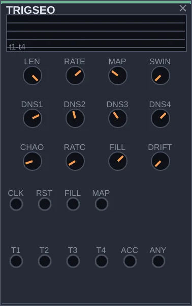
O que é
O TRIGSEQ gera ritmos de bateria em quatro linhas ao mesmo tempo, pensadas para bumbo, caixa, chimbal e uma percussão extra. Você não marca as batidas uma por uma: escolhe um estilo, decide a densidade de cada linha, e ele cria o padrão. Ao carregar, já está tocando.
Como pensar nele
Quatro CLOCK, um por instrumento, gerariam linhas que não conversam entre si. No TRIGSEQ as quatro nascem do mesmo estilo, e por isso se encaixam como numa bateria tocada por uma pessoa. O controle MAP passa por quatro caracteres: reto, como no rock e na house; quebrado, como no breakbeat; com balanço, como no hip-hop; e esparso, como no dub. Girando devagar, o groove muda de personalidade sem perder o pulso.
Controles
LEN: quantos dos 16 passos entram no ciclo.
RATE: o relógio interno, usado quando nada chega em CLK.
MAP: o estilo, do reto ao esparso.
DNS1, DNS2, DNS3, DNS4: a densidade de cada linha. Mais alto, mais batidas.
SWING: atrasa um passo a cada dois, dando balanço.
CHAOS: a chance de surgirem batidas fantasmas ou de faltarem batidas previstas, o que torna o ritmo menos mecânico.
RATCH: a chance de uma batida virar uma rajada rápida de repetições, um rufo.
FILL: quanto a entrada FILL aumenta as densidades, para viradas.
DRIFT: deixa o estilo e as densidades variarem aos poucos, e o groove evolui sozinho.
Entradas: CLK, o pulso; RST, para voltar ao começo; FILL, um sinal que dispara a virada; MAP, para modular o estilo. Saídas: T1 a T4, as quatro linhas; ACC, os acentos; ANY, um pulso sempre que qualquer linha toca.
Experimente
Ligue a saída CLK do CLOCK na entrada CLK do TRIGSEQ.
Ponha três DRUM no rack. Ligue T1, T2 e T3 nas entradas GATE de cada um, e as saídas OUT no MIXER.
Ajuste TONE e DECAY de cada DRUM para soar como bumbo, caixa e chimbal.
Gire MAP devagar e ouça o groove mudar de estilo. Depois mexa nas densidades.
ARP
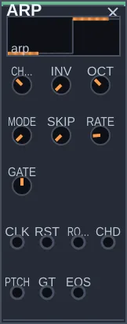
O que é
O ARP é um arpejador: toca um acorde nota por nota, e assim um acorde vira melodia. Ele escolhe as notas (um dos dez formatos de acorde do CHORD, com inversão e oitavas) e o caminho por elas. Sem nada ligado, toca no próprio relógio.
Como pensar nele
Separe duas perguntas: quais notas, e em que ordem. CHORD, INV e OCT respondem a primeira; MODE responde a segunda (subindo, descendo, ida e volta, ao acaso, embaralhado, do centro para fora, de fora para o centro). SKIP abre buracos na linha, e os buracos são sempre os mesmos para o mesmo patch, então a linha soa tocada e se repete igual.
Controles
CHORD: o formato do acorde, de 0 a 9.
INV: a inversão, de 0 a 3.
OCT: por quantas oitavas o arpejo se espalha, de 1 a 4.
MODE: o caminho pelas notas, de 0 a 7.
SKIP: a chance de um passo ficar em silêncio.
RATE: o relógio interno, usado quando nada está ligado em CLK.
GATE: a duração de cada nota, de 5 a 95 % do passo.
Entradas: CLK avança um passo por pulso, RST volta ao começo, ROOT recebe a tônica (1 volt por oitava), CHD troca o formato do acorde. Saídas: PTCH é a nota, GT o gate de cada nota, EOS um pulso a cada volta completa.
Experimente
Ligue PTCH no 1V/O de um OSC, a saída do OSC num VCA e o VCA no MIXER. Ligue GT num ENVELOPE e o ENVELOPE no VCA.
Gire MODE e ouça o mesmo acorde ganhar outros desenhos.
Ponha MODE em 5, SKIP em 0,3 e OCT em 3: parece uma linha improvisada.
Ligue a saída root do HARMONY em ROOT: o arpejo passa a andar com a progressão.
CELL
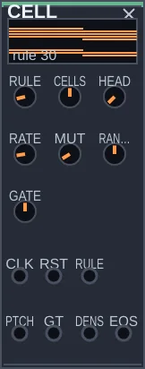
O que é
O CELL é um autômato celular: uma linha de casas acesas ou apagadas que se reescreve a cada pulso. Cada casa olha para si e para as duas vizinhas, e uma regra (um número de 0 a 255) decide se ela fica acesa. O módulo lê esse desenho com uma cabeça: a casa sob ela dá o gate, e as três seguintes escolhem a nota.
Como pensar nele
É uma partitura que se escreve sozinha por uma lei muito simples. Algumas regras dão desenhos que nunca se repetem (30, 110), outras dão triângulos (90) ou coisas que andam (184). Você não compõe as notas, compõe a lei. MUT acrescenta um pequeno acaso, para a linha não morrer nem travar.
Controles
RATE: o relógio interno, quando nada está ligado em CLK.
RULE: a regra, de 0 a 255. Comece por 30, 90, 110 e 184.
CELLS: quantas casas tem a linha, de 8 a 24.
HEAD: onde fica a cabeça de leitura.
RANGE: o alcance das notas, até 2 oitavas.
MUT: a chance de uma casa trocar ao acaso.
GATE: a duração de cada nota.
Entradas: CLK avança uma geração, RST recomeça a linha, RULE muda a regra por CV. Saídas: PTCH é a nota, GT o gate, DENS a proporção de casas acesas, EOS um pulso quando a linha renasce.
Experimente
Ligue GT num DRUM e o DRUM no MIXER. Com RULE em 30, ouça um ritmo que não se repete igual.
Ligue PTCH num OSC e GT num ENVELOPE que controla um VCA depois do OSC. Gire RULE devagar.
Ligue DENS no CUT de um FILTER: quanto mais vida na linha, mais brilho.
Ligue EOS no ADV do HARMONY: o acorde muda quando a linha renasce.
TAP
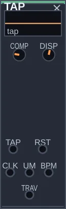
O que é
O TAP dá ao patch o andamento de quem toca. Bata três ou mais vezes na entrada TAP (um botão, uma tecla, palmas pelo SIGNAL-IN): ele mede o intervalo e passa a dar um pulso a cada tempo, sozinho, no seu andamento. A primeira batida é o tempo forte, o um.
Como pensar nele
É a contagem antes de a banda entrar. O TAP usa a mediana das batidas, então uma batida torta não estraga a conta. Se as batidas forem irregulares demais, ele não inventa um andamento: espera uma contagem melhor. Uma pausa e uma contagem nova trocam o andamento.
Controles
COMP: de quantos tempos é o compasso, de 1 a 16. A saída UM volta a cada COMP tempos.
DISP: quanta irregularidade ele aceita na contagem.
Entradas: TAP recebe as batidas, RST esquece o andamento. Saídas: CLK é o pulso a cada tempo, UM o tempo forte, BPM o andamento como CV, TRAV um gate enquanto o andamento está travado.
Experimente
Ligue o SIGNAL-IN no SCOPE e a saída ONS do SCOPE em TAP. Ligue o ON do SIGNAL-IN.
Ligue CLK na entrada de relógio externo do CLOCK: o patch inteiro passa a seguir o seu pulso.
Bata um, dois, três, quatro e comece a tocar: o patch já está no andamento.
Ponha COMP em 3 e ligue UM no RST de um SEQUENCE: a frase recomeça em cada compasso de valsa.
POLYGON
O que é
O POLYGON é um polímetro desenhado como figura. Há um ciclo comum e até quatro camadas; cada camada é um polígono de N vértices inscrito nesse ciclo, e cada vértice é um pulso. Um triângulo e um quadrado no mesmo ciclo dão três contra quatro.
Como pensar nele
Pense num relógio com vários ponteiros invisíveis, cada um marcando o ciclo em partes iguais diferentes. Os pulsos de cada camada são regulares; o interesse está onde eles se encontram. A saída COINC marca esses encontros, e é ali que a música costuma pedir um acento. F gira cada polígono, até um lado, para deslocar a camada sem mudar a sua divisão.
Controles
N1, N2, N3, N4: quantos vértices tem cada camada, de 0 (desligada) a 16.
F1, F2, F3, F4: a rotação de cada camada, até um lado do polígono.
CICLO: a duração do ciclo, de 0,25 a 32 s, quando nada está ligado em CLK.
PASSOS: com um relógio em CLK, quantos pulsos dura o ciclo.
Entradas: CLK conduz o ciclo por pulsos, RST recomeça. Saídas: G1 a G4 são os pulsos de cada camada, COINC pulsa quando dois ou mais vértices caem juntos, EOS no fim de cada ciclo, FASE é a posição no ciclo.
Experimente
Com N1 em 3 e N2 em 4, ligue G1 num DRUM e G2 noutro: três contra quatro.
Ligue COINC num terceiro som: só os encontros.
Ponha N3 em 5 e gire F3 devagar: a camada de cinco desliza sobre as outras.
Ligue o CLOCK em CLK e PASSOS em 16: o polímetro passa a andar no andamento do patch.
BUDGET
O que é
O BUDGET dá às vozes um orçamento de eventos. Quatro gates entram e saem, mas por ciclo só passam TETO eventos no total. Quando o orçamento acaba, os gates seguintes ficam de fora até o ciclo recomeçar.
Como pensar nele
Densidade não é qualidade. O BUDGET faz o patch escolher: com pouco orçamento, cada nota vale mais. Há duas economias. Compete: quem chega primeiro leva. Coopera: cada voz que toca tem a sua parte, e só passa da parte se as outras ainda não gastaram a delas.
Controles
TETO: quantos eventos cabem em cada ciclo, de 1 a 32.
COOP: desligado, as vozes competem; ligado, cooperam.
CICLO: a duração do ciclo, de 0,25 a 16 s, quando nada está ligado em CLK.
Entradas: G1 a G4 recebem os gates das vozes, CLK recomeça o ciclo a cada pulso. Saídas: O1 a O4 são os gates que passaram, SALDO o que resta do orçamento, FIM um pulso quando ele acaba.
Experimente
Ligue os gates de duas vozes em G1 e G2, e O1 e O2 nos envelopes delas.
Com TETO em 6, ouça as vozes disputarem o ciclo.
Ligue COOP: as duas passam a dividir o orçamento.
Ligue SALDO no corte de um FILTER: o som escurece à medida que o orçamento se gasta.
DECISION 14 módulos
QUANTIZER
O que é
O QUANTIZER prende um sinal contínuo às notas de uma escala. Um valor que sobe e desce livremente, vindo de um TURING, de um SH ou de um CHAOS, sai dele como uma sequência de notas afinadas. Na maior parte dos patches, é ele que transforma acaso em melodia.
Como pensar nele
Sinais de controle variam de forma contínua, e notas musicais não. Sem um quantizador, uma melodia gerada por acaso cai entre as notas e soa desafinada. O QUANTIZER arredonda cada valor para a nota mais próxima da escala escolhida. Com um pulso na entrada TRIG, ele só troca de nota no pulso, e a melodia ganha ritmo. A saída GATE pulsa sempre que a nota muda de fato, o que serve para disparar um envelope só em notas novas. As entradas ROOT e SCL trocam a tônica e a escala por cabo: ligadas às saídas do HARMONY, a tonalidade da melodia muda ao longo da música.
Controles
SCALE: a escala, entre treze: cromática, maior, menor natural, dórica, frígia dominante, lídia, menor melódica, pentatônica menor, pentatônica maior, hirajoshi, tons inteiros, só oitavas e o crivo.
ROOT: a tônica, a nota de partida da escala, de dó a si.
RANGE: quantas oitavas o sinal de entrada cobre, de 1 a 6. Mais oitavas, saltos maiores.
GLIDE: faz a altura escorregar de uma nota à seguinte.
HYST: uma margem de tolerância. Com um sinal instável, a nota não fica pulando entre duas vizinhas.
AFIN: a afinação, aplicada depois da escolha da nota: temperada de 12 notas (a de sempre), justa, pitagórica, mesotônica, 19 ou 31 divisões da oitava. As três históricas são medidas a partir da tônica e a acompanham quando ela muda.
M1, R1, M2, R2: o crivo de Xenakis, usado na escala número 13. Uma nota entra se o resto da divisão por M1 for R1, ou se o resto da divisão por M2 for R2. Com M que não divide 12, a escala não se repete na oitava.
AND: troca o ou do crivo por e: a nota precisa passar nas duas peneiras. Se nenhuma nota passar, o crivo volta ao ou, para nunca ficar mudo.
Entradas: CV, o sinal a quantizar; TRSP, para transpor antes de quantizar; TRIG, o pulso que decide quando trocar de nota; ROOT e SCL, que, com cabo, mandam na tônica e na escala no lugar dos knobs. Saídas: PTCH, a altura; GATE, um pulso a cada nota nova; ST, a nota em semitons.
Experimente
Ligue a saída CV de um TURING na entrada CV do QUANTIZER, e a saída CLK do CLOCK na entrada CLK do TURING.
Ligue PTCH em 1V/O de um OSC, e a saída SIN do OSC num ENVELOPE ligado ao MIXER. Ligue GATE do QUANTIZER em GATE do envelope.
Troque SCALE e ouça a mesma sequência de valores virar outra melodia. Mude ROOT para transpor.
HARMONY
O que é
O HARMONY decide por quais tonalidades a música passa. De tempos em tempos, ou a cada pulso na entrada ADV, ele escolhe um novo centro tonal, seguindo um entre sete movimentos que músicos de jazz e de cinema usam há décadas. A saída ROOT informa a tônica nova na mesma escala de altura que os osciladores entendem.
Como pensar nele
O QUANTIZER deixa a melodia afinada, mas sempre no mesmo tom. Músicas costumam viajar, e cada estilo viaja de um jeito. O controle MOVE escolhe o percurso: Coltrane, que salta uma terça maior a cada troca e fecha um ciclo de três tons, como em Giant Steps; substituição de trítono, que chega ao tom seguinte por um caminho inesperado; mediante cromática, mudanças de terça com efeito de trilha de cinema; intercâmbio modal, que mantém a tônica e troca o modo; jazz modal, que quase nunca sai do lugar; e backdoor, que sobe um tom inteiro.
Ligue a saída ROOT na entrada ROOT do QUANTIZER e a saída SCALE na entrada SCL. A cada troca, a escala da melodia muda, e cada nota passa para a mais próxima da escala nova: a melodia fica na mesma região, com outra cor. Para ouvir a melodia saltar para o centro novo, ligue a saída ROOT também na entrada TRSP do QUANTIZER.
Controles
MOVE: o tipo de percurso, entre os sete descritos.
RATE: o ritmo das trocas, quando nada chega em ADV. Vai de uma troca a cada poucos minutos a duas por segundo.
ROOT: a tônica de partida, para onde o módulo volta quando recebe um pulso em RST.
S-LO, S-HI: a faixa de escalas que podem ser sorteadas nas trocas.
HOLD: a chance de uma troca ser ignorada, o que alonga algumas seções.
CICLO: no movimento neo-riemanniano, o caminho pelas transformações: passeio livre, ciclo hexatônico (P e L alternados), ciclo octatônico (P e R alternados) ou LR, as quintas que caminham.
Entradas: ADV, o pulso que pede uma troca; RST, para voltar ao começo. Saídas: ROOT, a tônica como altura; SCALE, o número da escala; CHG, um pulso a cada troca. O sétimo movimento é o neo-riemanniano: a tríade sofre P (a paralela), R (a relativa) ou L (a troca da sensível), e cada uma move uma só nota por um ou dois semitons. A saída OP diz qual transformação aconteceu.
Experimente
Monte a melodia do QUANTIZER: a saída CV de um TURING, movido pelo CLOCK, na entrada CV do QUANTIZER, e PTCH do QUANTIZER em 1V/O de um OSC que passe por um ENVELOPE até o MIXER.
Ligue ROOT do HARMONY na entrada ROOT do QUANTIZER, e SCALE na entrada SCL.
Ponha MOVE na primeira posição, Coltrane, e suba RATE até uma troca a cada dois ou três segundos. A cada troca, a melodia muda de escala.
Ligue ROOT do HARMONY também na entrada TRSP do QUANTIZER. Agora a melodia salta de centro, em ciclos de três.
ABACUS
O que é
O ABACUS trata sinais como números. Ele faz contas entre duas entradas, conta pulsos e transforma a contagem em ritmos e escadas, e corta ou espelha a parte negativa de um sinal. Mesmo sem nada nas entradas A e B, o contador interno gera padrões que servem de ritmo e de melodia.
Como pensar nele
Contar é a forma mais simples de criar padrão. Um contador que vai de 0 a 7 e recomeça, olhado bit a bit, produz ritmos sincopados sem nenhum sequenciador: cada bit liga e desliga numa velocidade diferente. A saída QNT transforma a contagem numa escada de valores, boa para mandar a um QUANTIZER. E a saída RCT, o retificador, é útil sozinha sempre que se precisa da metade positiva de um sinal ou de seu valor absoluto.
Controles
OP: a conta entre A e B que sai em MTH: soma, subtração, multiplicação, resto da divisão, ou quatro operações bit a bit.
MOD: até quanto o contador conta antes de recomeçar, de 2 a 32.
STEP: em quantos degraus a saída QNT é dividida.
RNG: o tamanho da janela de valores usada pelas saídas MTH, QNT e RCT.
RECT: o modo do retificador: só a parte positiva, só a negativa, as duas espelhadas para cima, ou apenas o sinal, mais ou menos.
CNT: quanto o contador anda a cada pulso. Negativo conta para trás.
PAT: qual bit do contador vira a saída P1. Bits baixos trocam rápido; bits altos, devagar.
SLEW: suaviza as saídas MTH e QNT.
RATE: o relógio interno, usado quando nada chega em CLK.
Entradas: A e B, os números da conta; CLK, o pulso que faz contar; RST, para zerar. Saídas: MTH, a conta; QNT, a escada; RCT, o retificador; P1 e P2, dois ritmos tirados do contador; CRY, um pulso cada vez que a contagem recomeça.
Experimente
Ligue a saída CLK do CLOCK na entrada CLK do ABACUS, com MOD em 8.
Ligue P1, P2 e CRY nas entradas GATE de três DRUM ligados ao MIXER. Você ouve um ritmo sincopado que se fecha a cada oito pulsos.
Gire PAT e ouça P1 ficar mais rápido ou mais lento.
Ligue QNT na entrada CV de um QUANTIZER, e PTCH em 1V/O de um OSC ligado ao MIXER. A contagem vira uma melodia em escada.
DECISION
O que é
O DECISION é a fonte de escolhas do patch. A cada pulso, ele decide se dispara ou não um sinal na saída GATE, e sorteia dois valores nas saídas X e Y. Você controla a chance de disparar, o tamanho e a forma dos sorteios, e quanto ele se lembra do que já fez.
Como pensar nele
Uma onda lenta é previsível demais, e o ruído puro não tem forma. O DECISION fica no meio: acaso com regras. BIAS decide se algo acontece quase sempre ou só às vezes. SHAPE decide se os valores se espalham por igual ou se concentram perto do centro, com saltos grandes raros. DEJA é a memória: em vez de sortear de novo, ele relê os últimos passos, e a música passa a ter repetições, como um tema que volta.
Controles
RATE: o relógio interno, usado quando nada chega em TRIG.
BIAS: a chance de GATE disparar a cada pulso. Em zero, nunca; no máximo, sempre.
SPRD: o alcance dos sorteios em X e Y. Baixo, valores próximos do centro; alto, a faixa inteira.
SHAPE: em zero, todos os valores têm a mesma chance; no máximo, os valores perto do centro aparecem bem mais.
STEPS: divide os sorteios em degraus. Em 1, são contínuos.
SLEW: faz cada valor novo escorregar a partir do anterior.
DEJA: a chance de repetir um valor da memória em vez de sortear outro. Alto, a mesma frase tende a se repetir.
LOOP: o tamanho dessa memória, de 1 a 16 passos.
Entradas: TRIG, o pulso de cada decisão; BIAS e SPRD, para modular esses controles. Saídas: X e Y, os valores sorteados; GATE, a decisão.
Experimente
Ligue a saída EUC do CLOCK em TRIG.
Ligue X na entrada CV de um QUANTIZER, PTCH em 1V/O de um OSC, e o OSC por um ENVELOPE até o MIXER. Ligue GATE do DECISION em GATE do envelope.
Baixe BIAS e ouça as notas ficarem esparsas, só às vezes.
Suba DEJA aos poucos. A melodia começa a se repetir, e com DEJA no máximo fica presa num laço de LOOP passos.
BOXCAR
O que é
O BOXCAR mede um sinal em janelas curtas e tira a média de muitas medidas seguidas. A técnica vem de instrumentos de laboratório, usados para encontrar um sinal fraco escondido no ruído. No patch, ele serve de seguidor de volume muito estável, de reconstrutor de formas de onda e de oscilador feito daquilo que ele mediu.
Como pensar nele
O SH captura um instante; o BOXCAR captura uma fatia de tempo e faz a média. A cada pulso em TRIG, abre uma janela num ponto do ciclo, mede, e soma essa medida às anteriores. O que se repete igual a cada ciclo vai se firmando, e o que é acaso se cancela. MODE escolhe o que fazer com o resultado: entregar só a média, como um sinal de controle que acompanha o som devagar; tocar de volta o ciclo reconstruído; ou reler esse ciclo sozinho, como um oscilador. Ele tem ainda uma saída à parte, GEIG, com pulsos irregulares como os de um contador Geiger.
Controles
DLY: em que ponto do ciclo a janela abre.
APER: a largura da janela. Estreita, mede quase um instante; larga, faz a média de um trecho.
AVG: quantas medidas entram na média, de 1 a 64. Mais medidas, menos ruído e resposta mais lenta.
SCAN: faz a janela percorrer o ciclo sozinha, num sentido ou no outro. Em zero, fica parada.
MODE: seguidor, reconstrução ou oscilador.
RATE: o relógio interno, quando nada chega em TRIG, e a velocidade de releitura no modo oscilador.
THRSH: o nível que o sinal precisa cruzar para disparar uma medida, quando nada chega em TRIG.
GEI: a densidade dos pulsos na saída GEIG. Em zero, ela fica muda.
BLEND: a mistura entre o sinal original e o processado.
Entradas: IN, o sinal a medir; TRIG, o pulso de cada medida; SWP, para mover a janela; THR, para modular o limiar. Saídas: OUT e GEIG.
Experimente
Ligue GEIG na entrada GATE de um DRUM ligado ao MIXER e suba GEI. Você ouve golpes em momentos imprevisíveis.
Agora ligue uma voz que toque notas, como um OSC passando por um ENVELOPE, na entrada IN, com MODE na primeira posição e APER larga.
Ligue OUT na entrada CV1 de um VCA que controle outro som. O segundo som passa a seguir o volume da voz, sem tremer.
MARKOV
O que é
O MARKOV é uma cadeia de Markov: ele aprende de onde se vai para onde numa melodia (depois desta nota veio aquela três vezes, aquela outra uma vez) e improvisa sorteando a próxima nota pelo que aprendeu. Sem nada ligado, ele já toca, começando numa caminhada pentatônica.
Como pensar nele
É um aluno que imita o estilo de quem ouve, não as notas exatas. TEMP é a ousadia: perto de 0 ele repete o caminho mais comum, perto de 2 ele inventa. MEM é quanto ele lembra. A saída SURP diz quão inesperada foi cada nota, e isso também pode mover o patch.
Controles
RATE: o relógio interno, quando nada está ligado em CLK.
GATE: a duração de cada nota.
TEMP: a ousadia do sorteio, de 0 a 2.
MEM: quanto do que aprendeu ele guarda.
LEARN: liga ou desliga o aprendizado. Desligado, ele congela o vocabulário.
OCT: transpõe a saída em oitavas.
Entradas: CLK avança uma nota, LRN.P e LRN.G recebem a melodia a aprender (altura e gate), RST recomeça. Saídas: PTCH é a nota, GT o gate, SURP o grau de surpresa.
Experimente
Ligue PTCH num OSC e GT num ENVELOPE que controla um VCA. Ouça a caminhada inicial.
Ligue a altura e o gate de um PHRASE em LRN.P e LRN.G: o MARKOV passa a responder no estilo daquela voz.
Depois de ensinar, desligue LEARN e suba TEMP: ele improvisa com o vocabulário que guardou.
Ligue SURP no MIX de um SPACE: as notas inesperadas ganham eco.
COHERENCE
O que é
O COHERENCE mede o quanto uma melodia é previsível e rompe quando ela fica ordenada demais. Ele guarda as últimas notas e calcula a entropia de Shannon delas: uma nota repetida dá ordem 1, as doze notas por igual dão 0. Quando a ordem passa do limiar por tempo suficiente, ele dispara um pulso de ruptura.
Como pensar nele
Costuma-se pensar que a ruptura nasce do caos. Aqui é o contrário: a ordem extrema também rompe. A pressão sobe a cada nota previsível; depois de PAC notas seguidas, ela rompe. A ruptura deixa cicatriz: a janela esquece a metade mais antiga e, por CIC notas, a pressão não volta a subir. O módulo não soa: ele decide quando, e o cabo decide o quê.
Controles
JAN: a janela, quantas notas ele lembra, de 4 a 32.
LIM: o limiar de ordem acima do qual a pressão sobe.
PAC: a paciência, quantas notas seguidas acima do limiar até romper.
CIC: a cicatriz, quantas notas depois da ruptura sem nova pressão.
Entradas: PTCH recebe a altura, GATE marca cada nota (sem ele, conta cada mudança de altura), RST esquece tudo. Saídas: ORD é a ordem medida, PRES a pressão acumulada, COL o pulso de ruptura, SURP a surpresa de cada nota.
Experimente
Ligue a altura e o gate de um QUANTIZER que toca um SEQUENCE curto em PTCH e GATE.
Ligue COL no RST de um TURING que alimenta outra voz: quando a primeira linha se repete demais, a outra se refaz.
Ligue PRES no corte de um FILTER: o timbre abre enquanto a tensão cresce e fecha na ruptura.
Ligue SURP no nível de um VCA: a nota rara soa mais forte.
KEY
O que é
O KEY ouve quem toca, estima o tom e entrega a tônica e a escala ao QUANTIZER. Assim o patch passa a responder no tom de quem canta ou toca por cima, em vez de ficar na escala que a seed escolheu.
Como pensar nele
Ele conta quanto tempo cada uma das doze notas soou (a nota longa pesa mais que a de passagem) e compara esse retrato com os perfis de tonalidade de Krumhansl e Kessler. O tom só muda quando outro vence por ESTAB notas seguidas, para não tremular entre tons vizinhos. A saída CERT diz quando o tom é ambíguo, em vez de esconder isso. O visor mostra as doze notas, a tônica e o nome do tom.
Controles
MEM: quanto tempo ele lembra, de 2 a 60 s. Curto segue as modulações; longo fica firme.
ESTAB: quantas notas seguidas um tom novo precisa vencer para valer.
Entradas: PTCH recebe a altura, GATE marca cada nota, RST esquece tudo. Saídas: ROOT é a tônica, SCL a escala, CERT a certeza, MUD um pulso a cada troca de tom.
Experimente
Ligue o SIGNAL-IN no SCOPE, a saída PIT do SCOPE em PTCH e a saída ONS em GATE. Ligue ROOT e SCL nas entradas de tônica e escala do QUANTIZER.
Ligue o ON do SIGNAL-IN e cante uma melodia em ré menor: o visor mostra Dm e o patch passa a tocar nesse tom.
Ligue MUD na entrada FRASE do MIXER, com o palco no modo gesto: cada troca de tom muda o palco.
Sem microfone: um MARKOV num QUANTIZER, o QUANTIZER no KEY e o KEY num segundo QUANTIZER. A segunda voz segue o tom que a primeira parece ter.
ACCENT
O que é
O ACCENT dá fraseado a uma linha. Um intérprete não acentua só com volume: a nota acentuada é mais forte, mais brilhante e mais curta, e ele acentua por várias razões. O ACCENT junta essas causas, cada uma com o seu peso, numa ênfase de 0 a 1, e entrega essa ênfase em várias saídas ao mesmo tempo: nível, brilho, duração, varredura.
Como pensar nele
São seis causas de acento: o tempo forte (METR), o tamanho do salto (SALTO), a nota mais aguda da frase recente (APICE), o acento que vem de fora (EXT), a nota depois de uma nota longa (AGOG) e o acento de fora num tempo fraco (SINC). Três controles moldam o conjunto: HER deixa uma cauda na nota seguinte, SUPR impede que tudo vire acento, ROT faz o tempo forte migrar devagar. PROF é quanto disso chega às saídas.
Controles
METR: o peso do tempo forte de cada ciclo.
SALTO: o peso do tamanho do intervalo desde a nota anterior.
APICE: o peso da nota mais aguda das últimas oito.
EXT: o peso do acento que chega pela entrada ACC.
AGOG: o peso da nota que vem depois de uma nota longa.
SINC: o peso de um acento de fora num tempo fraco.
CICLO: de quantas notas é o ciclo métrico, de 2 a 16.
ROT: a velocidade com que o tempo forte muda de lugar.
HER: a cauda que um acento deixa na nota seguinte.
SUPR: depois de um acento forte, o seguinte custa mais.
PROF: a profundidade com que a ênfase chega às saídas.
Entradas: GATE marca cada nota, PTCH recebe a altura, ACC o acento de fora, RST recomeça o ciclo. Saídas: ENF é a ênfase, VCA o nível, FC o brilho para um filtro, DEC a duração para um envelope, SWP uma varredura que sobe com acentos seguidos, GT um gate só nas notas acentuadas, NIV a ênfase em quatro degraus (0, um terço, dois terços, 1).
Experimente
Toque uma linha de SEQUENCE por um QUANTIZER num OSC. Ligue a altura e o gate do QUANTIZER em PTCH e GATE.
Ligue a saída VCA no CV1 do VCA da voz: a linha passa a respirar como uma frase.
Passe o OSC por um LADDER e ligue SWP no FC dele: os acentos seguidos sobem a varredura, como num baixo ácido.
Ponha CICLO em 5 e ROT em 0,5: o tempo forte muda de lugar e as notas continuam as mesmas.
BLEFE
O que é
O BLEFE é um jogo de confiança feito de sinais. Cada gatilho vira um sinal, que soa sempre igual, seja verdade ou blefe. Uma janela depois, a verdade se confirma e o blefe não. A cada resolução, a confiança anda: sobe com verdades, cai com blefes. Quando a confiança construída despenca, é traição, e a resposta se recusa até o perdão.
Como pensar nele
Um número aleatório não tem intenção; um blefe tem. O módulo não sorteia notas, ele cria uma relação entre vozes: uma voz que responde enquanto confia, hesita quando desconfia e se cala depois de traída. VERD é a taxa de verdade, MEM a velocidade com que a confiança muda, LIM o ponto da traição. A entrada RST é o perdão. SEED fixa o jogo: a mesma semente dá as mesmas verdades e mentiras.
Controles
VERD: a taxa de verdade, de 0 a 1.
JAN: a janela entre o sinal e a confirmação, de 0,05 a 4 s.
MEM: a velocidade com que a confiança anda.
LIM: abaixo deste nível, a confiança construída vira traição.
SEED: a semente do jogo.
Entradas: IN recebe os gatilhos, RST perdoa e recomeça. Saídas: SIG é o sinal, sempre igual; VERD entrega a verdade escondida na hora, para quem quiser trapacear; CONF pulsa quando a verdade se confirma; CNF é o nível de confiança; RESP é a resposta, que se cala depois da traição; TRAI pulsa no instante da traição.
Experimente
Ligue o CLOCK em IN, SIG no gate de um ENVELOPE e CONF num DRUM: o sinal e a confirmação soam como dois sons.
Ligue RESP no CV1 do VCA de outra voz: ela responde enquanto confia.
Comece com VERD em 0,9 e depois gire para 0,2. A voz que responde cresce, hesita e se cala.
Ligue o EOS de um SEQUENCE em RST: a cada frase, a relação recomeça.
FRONTEIRA
O que é
A FRONTEIRA escuta uma melodia e marca onde começa uma ideia nova. Ouvimos uma fronteira onde algo muda: um salto depois de graus conjuntos, uma nota longa depois de curtas, uma pausa. O módulo mede essas três mudanças nota a nota e pulsa quando a força delas passa do limiar.
Como pensar nele
É o modelo de Cambouropoulos, a partir das regras de agrupamento de Lerdahl e Jackendoff. Para saber se uma nota é fronteira, ele precisa ouvir a seguinte, então o pulso chega uma nota depois. Um silêncio longo fecha a frase na hora. O PHRASE gera um motivo; a FRONTEIRA escuta.
Controles
LIM: o limiar de força acima do qual uma mudança vira fronteira.
MEM: quantas notas ele usa como referência do que é normal.
MIN: o mínimo de notas entre duas fronteiras.
SIL: quanto silêncio fecha a frase, de 0,3 a 4 s.
Entradas: PTCH recebe a altura, GATE marca cada nota. Saídas: FRONT pulsa no começo de cada célula, FORCA é a força da última fronteira, NOTAS quantas notas teve a célula, FIM pulsa quando o silêncio fecha a frase.
Experimente
Ligue o SIGNAL-IN no SCOPE, a saída PIT do SCOPE em PTCH e a saída ONS em GATE. Ligue o ON do SIGNAL-IN.
Ligue FRONT na entrada FRASE do MIXER, com o palco no modo gesto: cada ideia nova de quem toca muda o palco.
Ligue FIM no RST de um SEQUENCE: quando quem toca para, o acompanhamento recomeça com a próxima frase.
Ligue NOTAS na duração de um ENVELOPE: frases longas pedem notas mais longas.
COMPARADOR
O que é
O COMPARADOR mistura dois sinais com polaridade e decide quando a mistura passa de um limiar. Os knobs A e B têm o zero no centro: para a direita a entrada soma, para a esquerda entra invertida. A saída COMP é um gate que fica alto enquanto a mistura está acima do limiar.
Como pensar nele
É uma balança. Com A à direita e B à esquerda, a mistura é a diferença entre os dois sinais; com o mesmo sinal nos dois, ela se anula. A decisão vem depois: o gate abre quando a balança pende para um lado. A histerese impede que ele tremule quando o sinal tem ruído perto do limiar.
Controles
A, B: o quanto cada entrada entra, de −1 (invertida) a 1.
OFS: desloca a mistura toda para cima ou para baixo.
LIM: o limiar da decisão.
HIST: a histerese, uma folga em torno do limiar.
Entradas: A e B recebem os sinais, LIM move o limiar por CV. Saídas: MIX é a mistura, INV a mistura de cabeça para baixo, COMP o gate da decisão, CRUZ um pulso a cada mudança de lado.
Experimente
Ligue dois FUNCTION lentos, em velocidades diferentes, em A e B. Ponha A à direita e B à esquerda.
Ligue COMP no gate de um ENVELOPE e CRUZ num DRUM: dois movimentos lentos que se cruzam viram ritmo.
Ligue o mesmo sinal em A e B com A em 1 e B em −1: a mistura some.
Ligue o LVL de um SCOPE em A e ponha LIM no meio: quando quem toca passa de um volume, outra voz entra.
INTERPRET
O que é
O INTERPRET toca as notas que chegam como um intérprete tocaria. Ele não inventa notas: recebe a altura e o gate de qualquer sequenciador e devolve a nota tocada, com glide pelo intervalo, um pequeno excesso nos saltos, vibrato que cresce na nota longa, articulação pelo contexto, fôlego e brilho.
Como pensar nele
A partitura diz a nota; o intérprete diz como. O módulo olha para as notas recentes: marca o salto, sustenta o ápice da frase, encurta duas notas rápidas, liga o resto. O fôlego se gasta ao longo da frase e volta numa pausa. Três eixos de caráter (ENERG, SUAV, BRILHO) dão a personalidade, e DERIVA a faz mudar devagar. Com EXPR em 0, a nota sai crua.
Controles
EXPR: o quanto de interpretação; em 0, a nota crua.
GLIDE: o tempo de deslizar entre notas, até 0,3 s.
VIB: a profundidade do vibrato nas notas longas.
ENERG: o caráter enérgico, que marca os saltos.
SUAV: o caráter suave, que liga as notas.
BRILHO: o caráter brilhante, que abre o timbre no ápice.
DERIVA: o quanto o caráter muda com o tempo.
Entradas: PTCH recebe a altura, GATE o gate de cada nota, CAR move o caráter por CV. Saídas: PTCH é a altura tocada, AMP a dinâmica, BRT o brilho, FRASE a posição na frase, GT o gate articulado.
Experimente
Ligue a altura e o gate de um QUANTIZER em PTCH e GATE. Ligue a saída PTCH no 1V/O de um OSC e GT no envelope da voz.
Ponha EXPR em 0 e depois em 0,8: compare a nota crua com a tocada.
Ligue AMP no CV1 do VCA da voz e BRT no corte do filtro: a linha ganha dinâmica e cor.
Suba VIB e GLIDE numa linha lenta: ela passa a cantar.
PHRASE
O que é
PHRASE propõe um motivo e o toca quando recebe pulsos em CLK. A ideia retorna a cada frase, com mudanças de direção, pausas e acentos que você regula. Suas saídas comandam outras vozes; para ouvi-lo, é preciso ligá-lo a um oscilador e a um envelope.
Como pensar nele
Use CLOCK para um pulso regular ou os ataques do LISTEN para responder a outro som. SEED identifica o motivo. VAR transforma suas passagens; em zero, fica mais fácil reconhecer o desenho que volta. A entrada PITCH oferece um apoio, capturado no início de cada frase. Para escolher uma escala, passe a saída PITCH pelo QUANTIZER com RANGE=1. PHRASE não inclui por conta própria um repertório de estilos ou tradições musicais.
Controles
LEN: duração da frase em acontecimentos, de 2 a 16 pulsos. Não é uma duração fixa em segundos.
SPAN: âmbito do desenho, de 1 a 36 semitons, antes da quantização.
DIR: inclina o desenho para baixo ou para cima. No centro, mantém a direção do motivo de base.
VAR: quanto cada passagem se transforma. Comece em zero e aumente ouvindo o que ainda reconhece.
SPACE: probabilidade de pausas nos passos intermediários. O início e o fechamento são preservados.
CAD: força do retorno ao apoio no final.
GATE: duração de cada articulação, de 5 a 400 ms. A nota só fica audível se GATE estiver ligado ao envelope da voz.
SEED: identidade numérica do motivo, de 1 a 65535. Mudar recria o desenho e recomeça; VARIA não move esse controle.
Entradas: PITCH, apoio em 1 V por oitava; CLK, um passo por borda ascendente; RST, reinício; STIM, intensidade de 0 a 1; RET, pedido de conclusão no próximo passo. Saídas: PITCH, altura mantida; GATE, articulação; ACC, acento de 0 a 1; END, pulso de 5 ms no fechamento; PHASE, posição de 0 a 1 na frase. Sem STIM conectado, a intensidade é 1. Ao reabrir o patch, a frase recomeça: não retoma a posição exata da execução anterior.
Experimente
Desligue VARIA. Ligue CLOCK.EUC a PHRASE.CLK, PHRASE.PITCH a QUANTIZER.CV (RANGE=1), e QUANTIZER.PITCH a OSC.PITCH. Escolha uma escala no QUANTIZER.
Ligue OSC.SAW a ENVELOPE.IN, PHRASE.GATE a ENVELOPE.GATE e ENVELOPE.OUT ao MIXER. Comece com VAR=0 e SPACE=0. Ouça a ideia repetir; altere DIR e SPAN, um por vez.
Ponha um VCA entre a voz e o MIXER: ENVELOPE.OUT em VCA.IN1, VCA.O1 no MIXER, LVL1=0 e CV1=1. Ligue PHRASE.ACC a VCA.CV1 para ouvir os acentos. Aumente VAR e depois SPACE.
Troque CLOCK por LISTEN.L-HIT em CLK e ligue LISTEN.LOW a STIM. Agora o som escutado chama e intensifica as notas. Um pulso em RET pede um fechamento no próximo CLK; END pode chamar uma segunda voz.
ROUTE 6 módulos
SWITCH
O que é
O SWITCH é uma chave seletora comandada pelo patch. Ele pode escolher uma entre quatro fontes e mandá-la para uma saída, ou pegar uma fonte só e mandá-la para uma entre quatro saídas. A troca acontece a cada pulso, em ordem ou ao acaso, ou segue um sinal de controle.
Como pensar nele
Num patch que se transforma, mudar de material é tão importante quanto mudar de nota: a mesma melodia tocada ora por um oscilador, ora por uma corda; o filtro alimentado ora pelo ruído, ora pelo acorde. Sem o SWITCH, isso exige trocar cabos à mão. Com DEMUX desligado, ele escolhe entre A, B, C e D e entrega em OA. Ligado, pega o que chega em A e o envia a uma das quatro saídas, OA, OB, OC ou OD.
Controles
STEP: quantas posições a chave percorre, de 2 a 4.
MODE: como a posição muda: para a frente, indo e voltando, ao acaso, ou só pelo sinal da entrada ADR.
DEMUX: desligado, quatro entradas para uma saída; ligado, uma entrada para quatro saídas.
GLID: uma transição gradual entre as posições, em que as duas fontes se misturam por um instante. Em zero, o corte é seco.
SLEW: suaviza a troca para evitar estalos. Convém deixar sempre um pouco.
FANT: o scanner fantasma. A chave lembra os últimos endereços, e a saída FANT lê o lugar onde ela esteve, como um rastro.
ATRAS: quantos passos atrás o fantasma lê, de 1 a 3.
Entradas: A, B, C e D, as fontes; CLK, o pulso que avança; RST, para voltar à primeira posição; ADR, para escolher a posição com um sinal. Saídas: OA, OB, OC e OD; STP, a posição atual como sinal de controle.
Experimente
Ligue a saída SAW de um OSC em A, e OUT de um MATTER, tocado pelo CLOCK, em B. Ligue OA numa entrada do MIXER.
Ponha STEP em 2 e ligue a saída DIV de um LOGIC em CLK, com a saída CLK do CLOCK na entrada CLK do LOGIC e DIV em 4.
A cada quatro pulsos, o som troca de fonte. Suba GLID para que as trocas se fundam.
MATRIX
O que é
O MATRIX liga quatro entradas a quatro saídas por todos os caminhos possíveis ao mesmo tempo. No painel há uma grade de 16 células, e cada uma decide quanto de uma entrada vai para uma saída. É uma mesa de distribuição: em vez de um cabo por ligação, todas as ligações estão lá, cada uma com seu volume.
Como pensar nele
É útil quando se pensa em blocos: um pouco desta modulação em todos os destinos, ou trocar a fonte de tudo de uma vez. Ligue quatro fontes de movimento nas entradas e quatro destinos nas saídas, e a grade passa a ser um painel de modulação. Com áudio, vira um mixer de quatro saídas. Com DRIFT, as 16 células mudam devagar sozinhas, e a rede de ligações evolui com a música.
Controles
A grade: cada célula tem dois algarismos, a entrada e depois a saída. A célula 23, por exemplo, decide quanto da entrada 2 vai para a saída 3. Arraste na vertical para ajustar; valores negativos invertem o sinal.
LEVEL: o volume geral das quatro saídas.
NORM: equilibra o volume quando várias células de uma saída estão abertas, para que a soma não cresça demais.
RING: em vez de somar as entradas numa saída, multiplica, o que produz timbres metálicos com sinais de áudio.
SAT: uma saturação que segura o volume quando você realimenta a matriz.
DRIFT: faz as 16 células passearem devagar.
HIST: rotas com história. Cada cruzamento guarda o desgaste do que passou por ele: o caminho usado se alarga e o abandonado se estreita. A matriz lembra por onde o som andou.
Entradas: IN1 a IN4. Saídas: OUT1 a OUT4.
Experimente
Ligue a saída BI de um FUNCTION em IN1 e a saída A de um DRIFT em IN2.
Monte uma voz com FILTER e SPACE. Ligue OUT1 na entrada FC do FILTER e OUT2 na entrada FBK do SPACE.
Abra e feche as células 11, 12, 21 e 22 e ouça cada fonte passar de um destino ao outro.
Suba DRIFT e deixe a matriz se rearranjar sozinha.
MULT
O que é
O MULT pega um sinal de controle e o distribui para quatro saídas, cada uma com seu ajuste de tamanho e de deslocamento. Sem nada na entrada, ele vira um banco de quatro valores fixos que você regula à mão.
Como pensar nele
No Rasgo Modular, uma saída já pode ir para vários destinos com cabos comuns. O MULT existe para quando cada destino precisa de uma dose diferente: o mesmo envelope abrindo o filtro por inteiro, baixando um pouco o volume de outra voz, mexendo de leve num efeito. Uma entrada, quatro versões ajustadas. Com DUAL ligado, ele se divide em dois distribuidores de duas saídas cada.
Controles
DUAL: desligado, IN vai para as quatro saídas; ligado, IN vai para O1 e O2, e IN2 vai para O3 e O4.
SCL1, SCL2, SCL3, SCL4: o tamanho do sinal em cada saída. Em 1 passa igual; abaixo de 1, diminui; acima, aumenta; negativo, inverte. Em zero, sobra só o deslocamento.
OFF1, OFF2, OFF3, OFF4: um valor somado a cada saída. Sem nada na entrada, é o próprio valor da saída.
SLEW: suaviza as quatro saídas juntas.
Entradas: IN e IN2. Saídas: O1 a O4.
Experimente
Faça duas vozes, cada uma com seu FILTER, passando pelo MIXER.
Ligue a saída ENV de um ENVELOPE, tocado pelo CLOCK, em IN do MULT. Ligue O1 em FC do primeiro FILTER e O2 em FC do segundo.
Deixe SCL1 em 1 e leve SCL2 para um valor negativo. A cada nota, um filtro abre e o outro fecha.
PLANAR
O que é
O PLANAR mistura quatro sons postos nos cantos de um quadrado. Um ponto se move dentro do quadrado, e o som que sai é a mistura dos quatro, pesada pela distância do ponto a cada canto. Movendo o ponto devagar, o timbre se transforma de um som em outro. A técnica se chama síntese vetorial.
Como pensar nele
Pense num joystick: X move o ponto da esquerda para a direita, Y de baixo para cima. Você pode mover à mão, com duas ondas lentas, ou com um DRIFT, e o ponto desenha figuras. A posição também sai pelas saídas X' e Y', o que permite que o mesmo movimento conduza outros controles do patch. Com um pulso longo na entrada GST, o PLANAR grava o trajeto que você fizer nos knobs X e Y e depois o repete sem parar.
Controles
X, Y: a posição do ponto no quadrado. Os sinais nas entradas de mesmo nome se somam a estes valores.
CURVE: o jeito de misturar. Num extremo, a mistura é linear, boa para sinais de controle; no outro, mantém o volume constante, e o som não afunda quando o ponto está no meio.
SMTH: faz o ponto escorregar até a posição nova, em vez de saltar.
RATE: a velocidade da repetição do gesto gravado e do passeio de DRIFT.
DRIFT: faz o ponto passear sozinho pelo quadrado.
Entradas: A, B, C e D, os quatro sons; X e Y, para mover o ponto; GST, para gravar e repetir um gesto. Saídas: OUT, a mistura; X' e Y', a posição do ponto.
Experimente
Ligue quatro fontes diferentes em A, B, C e D: por exemplo SAW de um OSC, OUT de um WAVETABLE, OUT do CHORD e PNK de um NOISE. Ligue OUT do PLANAR no MIXER.
Mova X e Y à mão e ouça o som passar de um canto ao outro.
Ligue BI de dois FUNCTION lentos, em velocidades diferentes, nas entradas X e Y. O ponto desenha uma figura e o timbre não para de mudar.
Ligue Y' na entrada FC de um FILTER no caminho do som: o filtro acompanha o movimento.
VIA
O que é
A VIA é o caminho do sinal tratado como matéria. São sete portas por onde o som pode passar: resistor, diodo, capacitor, pulso, transistor, refluxo e alto-falante. As abertas se combinam pela média. Cada uma deixa no som a marca de um componente.
Como pensar nele
Num circuito, o fio nunca é neutro: o diodo corta, o capacitor guarda e solta, o alto-falante tem corpo e satura. A VIA põe esses comportamentos entre dois módulos quaisquer, num cabo de áudio ou de controle. As seis primeiras portas vêm do Antitotem; o FALANTE é um corpo ressonante afinado em CORPO. Sem nenhuma porta aberta, o caminho fica em silêncio.
Controles
RES: o resistor: o sinal, atenuado.
DIODO: retifica; só o lado de cima da onda passa, com direção.
CAP: o capacitor, que guarda e solta devagar.
PULSO: só a borda; o sinal vira um limiar, quase um degrau.
TRANS: a curva assimétrica do transistor, junto do capacitor.
REFLX: o refluxo, a diferença entre o sinal e a memória do capacitor: uma corrente que volta alterada.
FALANTE: o corpo de um alto-falante, que ressoa e satura.
MEM: o tempo do capacitor, de 1 ms a 2 s.
CORPO: a ressonância do alto-falante, de 40 a 400 Hz.
NIVEL: o nível de saída.
Entradas: IN recebe o sinal, MEM move o tempo do capacitor. Saídas: OUT é o sinal transformado, CAP o estado do capacitor como CV.
Experimente
Passe uma voz pela VIA só com RES aberto: o som passa igual.
Abra FALANTE e gire CORPO: a voz ganha o corpo de uma caixa pequena ou grande.
Feche tudo e abra só DIODO e CAP: um timbre roído, com memória.
Ligue um LFO em IN e use a saída CAP para mover um filtro: a VIA também trata sinais de controle.
RELATE
O que é
O RELATE recebe duas vozes e as devolve transformadas pela relação entre elas. Um seguidor de envelope mede quando cada uma soa, e um verbo decide o que essa relação faz.
Como pensar nele
Num grupo, os músicos não tocam sozinhos: um responde, outro cede, um terceiro contamina. O RELATE põe essa escuta entre duas vozes do patch. São cinco verbos. Sombra: B soa onde A soou, um tempo depois. Hoqueto: uma cede quando a outra soa. Contágio: o envelope lento de cada uma contamina a outra, e as duas passam a respirar juntas. Atrito: onde as duas soam juntas, a mistura ganha o produto delas, que se repara devagar quando o encontro passa. Anel: a mistura é o produto puro das duas.
Controles
VERBO: a relação, de 0 a 4 (sombra, hoqueto, contágio, atrito, anel).
INT: a intensidade da relação.
TEMPO: o atraso da sombra e a demora das outras relações.
Entradas: A e B recebem as duas vozes. Saídas: OA e OB são as vozes transformadas, MIX a soma delas, ENC o encontro, de 0 a 1.
Experimente
Ligue a voz principal em A e a contravoz em B, e OA e OB em dois canais do MIXER.
Com VERBO em hoqueto, ouça as vozes passarem a se revezar.
Troque para sombra e suba TEMPO: a segunda voz vira o eco rítmico da primeira.
Ligue ENC no MIX de um SPACE: quando as duas se encontram, o espaço se abre.
SPACE 11 módulos
SPACE
O que é
O SPACE coloca o som num lugar. Ele repete o som com atraso, uma ou várias vezes, e pode espalhar essas repetições até que elas se fundam numa cauda contínua. Com poucos ajustes, vai de um eco nítido a uma sala ampla.
Como pensar nele
Eco e reverberação são pontas de um mesmo caminho. Um único atraso, sem nada mais, é um eco. Acrescente repetições, faça-as voltar à entrada e embaralhe-as, e o ouvido deixa de distinguir cada uma: ouve uma sala. O SPACE percorre esse caminho inteiro. O lugar dele é perto do fim do patch, antes do MIXER ou do MASTER, e várias vozes passando pelo mesmo SPACE soam como se estivessem no mesmo ambiente.
Controles
TIME: o tempo de atraso, de 2 milissegundos a 2 segundos. Girar com o som passando dá a impressão de o espaço mudar de tamanho.
TAPS: quantas repetições saem a cada passagem, de 1 a 8.
SPRD: espalha essas repetições no tempo. Em zero, saem juntas, como um eco só; no máximo, formam um padrão rítmico.
FBK: quanto do som repetido volta para ser repetido de novo. Mais, mais repetições e uma cauda mais longa.
DIFF: embaralha as repetições até que deixem de ser ouvidas uma a uma. Subindo FBK e DIFF juntos, o eco vira sala.
TONE: o brilho das repetições. Baixo, cada volta fica mais escura, como num ambiente real; alto, o brilho se mantém.
MOD: uma leve oscilação no tempo das repetições, que deixa a cauda mais larga e cintilante.
MIX: a mistura entre o som original e o processado, na saída OUT.
Entradas: IN, o som; TIME e FBK, para modular esses controles. Saídas: OUT, a mistura; WET, só o som processado.
Experimente
Ligue uma voz que toque notas curtas, como um MATTER tocado pelo CLOCK, na entrada IN, e OUT numa entrada do MIXER.
Ponha TAPS em 1, SPRD e DIFF em zero, e FBK num terço. Você ouve um eco limpo.
Suba DIFF e FBK juntos, devagar. O eco se transforma em sala sem nenhum salto.
Mexa em TIME com a cauda soando e ouça o espaço mudar de tamanho.
HALL
O que é
O HALL é uma reverberação estéreo, o som de uma sala grande, de uma igreja ou de uma placa de estúdio. Diferente das repetições que se percebem no SPACE, aqui a cauda é lisa e densa desde o começo. Ele também pode congelar o som e mantê-lo soando indefinidamente.
Como pensar nele
Use o SPACE quando quiser ouvir ecos e o HALL quando quiser uma sala. Como tamanho e duração aceitam sinais de controle, a sala pode respirar com uma onda lenta, crescer junto com a música ou se abrir só em certas notas. A entrada FRZ congela a cauda enquanto o sinal estiver ligado: um acorde vira um fundo contínuo, sobre o qual o resto do patch toca.
Controles
SIZE: o tamanho do espaço, de uma sala pequena a um salão.
DECAY: quanto tempo a cauda leva para morrer, de um quinto de segundo a uns quinze segundos. No máximo, quase não morre.
DAMP: o quanto os agudos se perdem na cauda. Em zero, brilhante; no máximo, escuro, como numa sala cheia de cortinas.
MOD: uma oscilação leve dentro da cauda, que evita um timbre metálico.
PRE: um pequeno atraso antes de a reverberação começar, até uns 120 milissegundos. Ajuda a separar o som direto da sala e faz o espaço parecer maior.
MIX: a mistura entre o som original e o processado.
Entradas: IN, o som; SIZE e DEC, para modular tamanho e duração; FRZ, para congelar. Saídas: L e R, os dois lados do estéreo.
Experimente
Ligue OUT do CHORD na entrada IN, e L e R em duas entradas do MIXER.
Suba MIX e DECAY e ouça o acorde ganhar uma cauda longa.
Ligue a saída UNI de um FUNCTION bem lento em SIZE. A sala passa a respirar.
Ligue a saída GATE de um DECISION com BIAS baixo em FRZ. De vez em quando, a cauda congela.
LOOPER
O que é
O LOOPER é um eco que imita fita magnética. Ele repete o som com atraso, com repetições que podem envelhecer a cada volta, perdendo brilho e ganhando ruído. Também pode congelar um trecho e repeti-lo sem fim, ou tocá-lo ao contrário.
Como pensar nele
Muita música feita com gravadores de fita vive de três gestos: repetir uma frase, tocá-la de trás para a frente e deixar o eco se gastar. O LOOPER traz os três. Com AGE em zero, é um eco digital limpo; subindo AGE, aparecem as marcas da fita. Com HOLD ligado, o trecho que está no laço passa a se repetir, e você pode tocar por cima dele. O SPACE serve para criar ambiente; o LOOPER, para ecos que se ouvem como repetições.
Controles
TIME: o tamanho do laço, de um milésimo de segundo a dois segundos.
FBK: quanto do som repetido volta ao laço. Perto de 1, as repetições quase não acabam; acima de 1, crescem até saturar.
AGE: o desgaste da fita: perda de agudo, oscilação da afinação, saturação e chiado.
MIX: a mistura entre o som original e as repetições.
HOLD: congela o laço. Ele para de gravar e repete o trecho atual sem fim.
REV: toca o laço de trás para a frente.
HEADS: quantas cabeças de leitura, de 1 a 4. Com mais de uma, cada cabeça repete num tempo diferente, e o eco fica denso e rítmico.
Entradas: IN, o som; TIME, para modular o tempo; FRZ e REV, para congelar e inverter com um sinal. Saídas: OUT, a mistura; WET, só as repetições.
Experimente
Ligue uma voz que toque notas na entrada IN, e OUT numa entrada do MIXER.
Ponha TIME em uns 0,35 segundo, FBK no meio e AGE num terço. Você ouve um eco de fita.
Suba HEADS para 3 e ouça as repetições se multiplicarem.
Ligue HOLD no fim de uma frase. Ela fica girando enquanto a voz continua tocando. Ligue REV para ouvi-la ao contrário.
SWIRL
O que é
O SWIRL reúne quatro efeitos de movimento: chorus, flanger, ensemble e phaser. Todos fazem o som ondular, ganhar largura ou parecer que gira, sem criar ecos audíveis. Ele recebe um som e o devolve em estéreo.
Como pensar nele
Os quatro efeitos partem da mesma ideia: misturar o som com uma cópia dele levemente atrasada, com o atraso variando devagar. O chorus engorda e alarga, como várias pessoas tocando a mesma nota. O flanger produz um varrido metálico, como um avião que passa. O ensemble é um chorus mais denso, típico de sintetizadores de cordas. O phaser cria vales que sobem e descem pelo espectro. Num pad ou numa voz única, dá movimento e largura.
Controles
TYPE: o efeito: chorus, flanger, ensemble ou phaser.
RATE: a velocidade da ondulação, de uma volta a cada cinquenta segundos a oito por segundo.
DEPTH: a intensidade da ondulação.
FBK: quanto do som processado volta à entrada. Deixa o flanger e o phaser mais marcados; perto dos extremos, eles chegam a soar sozinhos.
SPRD: a diferença entre os lados esquerdo e direito, ou seja, a largura do estéreo.
TONE: escurece ou clareia o som processado.
AGE: imita os circuitos analógicos antigos desses efeitos, com um pouco de ruído e instabilidade.
MIX: a mistura entre o som original e o processado.
Entradas: IN, o som; RTM e MXM, para modular a velocidade e a mistura. Saídas: L e R.
Experimente
Ligue OUT do CHORD na entrada IN, e L e R em duas entradas do MIXER.
Com TYPE em chorus, RATE baixo e DEPTH perto do meio, ouça o acorde ganhar largura.
Passe TYPE para flanger, suba FBK e baixe RATE. O som ganha um varrido metálico.
Experimente phaser com RATE bem lento num som de fundo.
MEMORY
O que é
O MEMORY grava continuamente os últimos três segundos do que entra nele e toca de volta esse material em pedacinhos, chamados grãos. Cada grão é um fragmento curto, e muitos grãos juntos formam uma nuvem de som que pode ser transposta, espalhada no tempo ou congelada. A técnica se chama síntese granular.
Como pensar nele
Com o MEMORY, o patch passa a se lembrar do que tocou. Uma frase que acabou de soar volta como textura, mais aguda ou mais grave, esticada, borrada. Grãos curtos e esparsos dão um ritmo áspero; grãos longos e numerosos, uma nuvem lisa. Com HOLD ligado, a gravação para e o trecho guardado vira matéria fixa, que os grãos continuam explorando. O LOOPER repete trechos inteiros; o MEMORY os desmancha em partículas.
Controles
GRAIN: a duração de cada grão, de 5 milissegundos a meio segundo. Curto, textura granulada; longo, quase o som original.
DENS: quantos grãos novos nascem por segundo. Poucos dão pontos isolados; muitos, uma nuvem contínua.
POS: de que ponto da gravação os grãos são lidos, do mais recente ao mais antigo.
SPRAY: espalha o ponto de leitura de cada grão, borrando o tempo.
PITCH: transpõe os grãos, até duas oitavas para cima ou para baixo.
FBK: devolve a nuvem à gravação, e o material se acumula e se desgasta.
BLEND: a mistura entre o som que entra e a nuvem.
HOLD: para a gravação e congela o material guardado.
Entradas: IN, o som; POS, para mover o ponto de leitura; PTCH, para transpor; FRZ, para congelar com um sinal. Saída: OUT.
Experimente
Ligue uma voz que toque uma melodia na entrada IN, e OUT numa entrada do MIXER.
Ponha GRAIN em torno de 0,1 segundo, DENS perto de 30 e ouça a melodia virar nuvem.
Suba SPRAY e mude PITCH para uma oitava acima.
Ligue HOLD. A gravação para, e a nuvem continua a partir do último trecho guardado.
SAMPLER
O que é
O SAMPLER grava um trecho do que entra nele, até uns oito segundos, divide esse trecho em fatias e as toca quando recebe pulsos. É o gesto dos samplers de hip-hop e de música eletrônica: pegar uma gravação, picá-la e tocá-la em outra ordem, mais rápida, mais lenta ou ao contrário.
Como pensar nele
Enquanto a entrada REC estiver ligada, ele grava o que chega em IN. Quando REC desliga, o trecho fica guardado. A partir daí, cada pulso em TRIG toca uma fatia, e a entrada POS escolhe qual. Com um TRIGSEQ disparando e uma SEQUENCE escolhendo as fatias, a gravação se recombina num ritmo novo. Ligando a saída do próprio patch na entrada, o instrumento passa a reaproveitar o que acabou de tocar.
Controles
START: onde, dentro da fatia, a leitura começa.
SPEED: a velocidade de leitura, de um quarto a quatro vezes a original. Negativo toca ao contrário. Normalmente, mais rápido também soa mais agudo.
SLICE: em quantas fatias iguais a gravação é dividida, de 1 a 16.
REPIT: desligado, velocidade e altura andam juntas, como numa fita; ligado, a altura vem da entrada PIT e a duração da fatia se mantém.
WEAR: desgaste a cada disparo: um início impreciso, perda de definição, som granulado.
LOOP: desligado, cada fatia toca uma vez; ligado, ela se repete.
Entradas: TRIG, o pulso que toca; IN, o som a gravar; REC, o sinal que grava enquanto está ligado; POS, para escolher a fatia; PIT, para afinar. Saída: OUT.
Experimente
Ligue uma voz que toque uma frase, por exemplo uma SEQUENCE tocando um OSC, na entrada IN.
Para gravar, ligue a saída DIV de um LOGIC em REC, com a saída CLK do CLOCK no CLK do LOGIC e DIV em 16. Ligue OUT do SAMPLER no MIXER.
Ponha SLICE em 8, ligue T1 de um TRIGSEQ em TRIG e a saída CV de um TURING em POS. A frase gravada volta picada e reordenada.
Mova SPEED para a esquerda do centro e ouça as fatias ao contrário.
TURNTABLE
O que é
O TURNTABLE toca uma gravação como se ela estivesse num disco de vinil. Ele grava um trecho, como o SAMPLER, mas a leitura imita um prato de verdade: o disco tem peso, demora para ganhar velocidade, freia aos poucos e pode ser empurrado para a frente e para trás, como no scratch de um DJ.
Como pensar nele
O SAMPLER salta de um ponto a outro na hora. O TURNTABLE tem inércia, e é isso que dá o som de vinil: a afinação escorrega quando o disco acelera ou freia. A entrada SCR é a mão sobre o disco: uma onda lenta ali faz o disco ir e voltar no ritmo. A entrada BRK desliga o motor, e o som desce até parar, no efeito conhecido como tape stop. Não há sincronia automática de andamento: acertar o ritmo é parte do gesto.
Controles
SPEED: a velocidade que o motor tenta alcançar, de metade a o dobro da original. Negativo gira o disco para trás.
TORQ: a força do motor, ou seja, quão rápido o disco chega à velocidade. Baixo, a partida tem uma oscilação longa de afinação; no mínimo, o disco só se move pela mão, na entrada SCR.
FRIC: o atrito. Decide quão rápido o disco para ao frear e quanto ele volta sozinho ao ritmo depois de um scratch.
GRAB: a firmeza da mão, quanto o sinal em SCR move o disco.
START: onde a agulha cai a cada pulso em TRIG.
WEAR: o desgaste do disco: estalos e pequenas irregularidades de rotação.
LOOP: desligado, o disco acaba e para; ligado, a leitura dá a volta e recomeça.
Entradas: TRIG, para recolocar a agulha; IN, o som a gravar; REC, o sinal que grava enquanto está ligado; SCR, a mão no disco; BRK, o freio. Saída: OUT.
Experimente
Grave uma frase como no SAMPLER: a voz em IN e a saída DIV de um LOGIC, com DIV em 16, em REC. Ligue OUT no MIXER e LOOP.
Ligue a saída BI de um FUNCTION a uns 2 Hz em SCR e suba GRAB até o meio. O disco vai e volta, num scratch.
Retire o cabo de SCR. Ligue a saída GATE de um DECISION com BIAS baixo em BRK. De vez em quando, o disco freia e volta a girar.
SPRING
O que é
O SPRING é um reverb de mola. Num amplificador, a mola de verdade leva o som de uma ponta à outra, e cada ida e volta chega com os graves atrasados em relação aos agudos: é o "boing". O módulo imita isso com um laço de atraso e filtros que espalham as frequências no tempo.
Como pensar nele
É menos um espaço e mais um objeto: um tanque de metal que soa por conta própria. TENS é o comprimento da mola, DRIP quanto "boing" ela tem, DAMP o brilho, DECAY quanto dura. A entrada KICK sacode o tanque, como quem bate no amplificador.
Controles
DECAY: quanto a cauda dura.
TENS: a tensão da mola; muda a altura do "boing".
DAMP: tira brilho da cauda.
DRIP: quanto da dispersão característica da mola aparece.
MIX: a proporção entre o som original e o da mola.
Entradas: IN recebe o som, KICK sacode o tanque, TENS move a tensão por CV. Saídas: OUT é a mistura, WET só a mola.
Experimente
Passe uma voz pelo SPRING com MIX em 0,4, DRIP alto e DAMP baixo: o som de surf.
Ligue um CLOCK lento em KICK: o tanque estala sozinho.
Ligue um LFO lento em TENS: o eco desafina e geme.
Mande WET para um canal próprio do MIXER: a mola vira instrumento.
PRISM
O que é
O PRISM separa o som em cores, como um prisma separa a luz. São seis faixas, do grave ao agudo, cada uma atrasada pelo seu próprio índice e posta num lugar do estéreo. Um golpe vira um arco-íris que escorre no tempo.
Como pensar nele
No vidro, cada cor anda numa velocidade. Aqui DISP é a espessura do vidro e CURVE o sentido: positiva, os agudos chegam depois, como na luz; negativa, os graves chegam depois, o que o vidro não faz. FDBK devolve cada cor ao prisma, e os ecos se separam mais a cada volta.
Controles
DISP: o atraso máximo entre as cores, até 400 ms.
CURVE: o sentido e a forma da dispersão, de −1 a 1.
SPRD: o quanto as cores se espalham no estéreo.
FDBK: quanto de cada cor volta ao prisma.
MIX: a proporção entre o som original e o disperso.
Entradas: IN recebe o som, DISP move a dispersão por CV. Saídas: OUT é a mistura, WET só o som disperso.
Experimente
Passe um DRUM pelo PRISM com CURVE em 1, DISP em 200 ms e SPRD no máximo: cada batida escorre do grave ao agudo, de um lado ao outro.
Ponha CURVE em −1 e compare.
Suba FDBK para 0,7, com DISP em 80 ms e MIX em 0,6: ecos coloridos.
Ligue um LFO lento em DISP: o arco-íris respira.
APOCRIFO
O que é
O APOCRIFO traz o passado distante para dentro do presente, como uma ruptura. O LOOPER repete o agora; o APÓCRIFO cita o que soou pelo menos IDADE segundos atrás. Ele guarda a entrada, nunca a própria saída: o apócrifo não cita a si mesmo.
Como pensar nele
São três modos de citar. Corroída: o trecho volta ao contrário e roído, com o presente abaixado por baixo, como uma memória corrompida. Corte: um corte de montagem, o trecho volta limpo uma vez e as emendas caem no cruzamento de zero, como a lâmina do editor de fita. Parêntese: o agora gagueja por um instante enquanto o patch segue por baixo, e volta exatamente onde o patch já está. A citação vem por um gatilho em CIT ou sozinha, pela CHANCE.
Controles
MODO: corroída (0), corte (1) ou parêntese (2).
IDADE: de quão longe vem a citação, de 5 a 55 s.
DUR: quanto dura o trecho citado.
CHANCE: a frequência das citações espontâneas; em 0, só por gatilho.
PROF: a profundidade da citação sobre o presente.
SEED: a semente que escolhe os trechos.
Entradas: IN recebe o som, CIT dispara uma citação. Saídas: OUT é o som com as citações, ATIVO um gate enquanto a citação soa, IDADE de quão longe ela veio.
Experimente
Ligue a saída do MIXER em IN e OUT no MASTER.
Ponha CHANCE em 0,3, MODO em corroída e IDADE em 30: de vez em quando, a peça de meio minuto atrás rasga o meio.
Troque para o modo corte e ligue o COL do COHERENCE em CIT: quando a linha fica previsível demais, a peça corta para o passado.
Ligue a saída IDADE no corte de um FILTER: quanto mais antiga a citação, mais escura.
CUTUP
O que é
O CUTUP recorta o próprio som no andamento do patch. Ele guarda os últimos quatro segundos e, quando chamado, faz um gesto de montagem sobre os últimos tempos do relógio: gagueira, rajada embaralhada, repetição microscópica ou silêncio.
Como pensar nele
É a técnica de recorte de William Burroughs e da colagem de fita, posta no barramento. Os gestos vêm por gate, cada um na sua entrada, ou sozinhos com CHANCE. Cada fragmento tem bordas suaves de 3 ms, e o gesto inteiro também, para o corte não estalar.
Controles
CHANCE: a frequência dos gestos espontâneos; em 0, só por gate.
MICRO: quantas repetições tem o gesto microscópico, de 2 a 8.
MIX: a proporção entre o som original e o recortado.
SEED: a semente que escolhe gestos e fatias.
Entradas: IN recebe o som, CLK o relógio do patch, STUT dispara a gagueira, BURST a rajada de fatias embaralhadas, MICRO a repetição microscópica, GAP um tempo de silêncio. Saídas: OUT é o som recortado, ATIVO um gate enquanto um gesto soa.
Experimente
Ligue a saída do MIXER em IN, OUT no MASTER e o CLOCK em CLK.
Ponha CHANCE em 0,15: de vez em quando, o patch se recorta no tempo certo.
Ligue a saída euclidiana do CLOCK em STUT: a gagueira cai nos tempos do ritmo.
Ligue o EOS de um SEQUENCE em GAP: cada frase termina com um silêncio cortado.
OUT 5 módulos
MIXER
O que é
O MIXER junta até quatro sons numa saída estéreo. Cada canal tem seu volume, sua posição entre os alto-falantes esquerdo e direito, e uma chave para silenciá-lo. É por ele que as vozes do patch chegam ao MASTER e daí aos seus ouvidos.
Como pensar nele
No Rasgo Modular, cada entrada aceita um cabo só, então sons não se somam por acaso: para juntar vozes, é preciso um MIXER. Ele é também o lugar de equilibrar o patch, decidindo o que fica na frente e o que fica ao fundo, e de abrir o som no estéreo, pondo cada voz num ponto entre a esquerda e a direita. Quase todo patch termina com um MIXER ligado ao MASTER, e as sementes já vêm assim.
Controles
CH1, CH2, CH3, CH4: o volume de cada canal, do silêncio a 12 dB acima do normal.
PAN: a posição de cada canal entre a esquerda e a direita.
MUTE: silencia o canal sem mexer no volume, para comparar o patch com e sem aquela voz.
OUT: o volume da saída, depois da soma.
Entradas: 1, 2, 3 e 4, os canais. Saída: L+R, a mistura estéreo.
Experimente
Ligue duas vozes diferentes nas entradas 1 e 2, e L+R na entrada IN do MASTER, se ainda não estiver ligado.
Equilibre os dois volumes até que nenhuma voz encubra a outra.
Leve o PAN de um canal para a esquerda e o do outro para a direita. As vozes se separam no espaço.
Use MUTE para ouvir cada voz sozinha e depois as duas juntas.
MASTER
O que é
O MASTER é a última etapa antes da placa de som. Ele define o volume final, ajusta a largura do estéreo e protege a saída contra picos, para que nada chegue distorcido ou alto demais aos alto-falantes. A saída dele já está ligada ao som do computador: não há onde cabeá-la.
Como pensar nele
O MIXER soma, mas a soma pode ter picos, um estéreo exagerado ou um desvio constante que gasta a potência dos alto-falantes sem soar. O MASTER cuida disso. O medidor mostra o nível; um pequeno quadrado acende quando o limitador precisa segurar um pico. Na prática, ajuste o volume pelo GAIN e deixe as proteções ligadas. A chave de silêncio do cabeçalho do app é o MUTE deste módulo.
Controles
GAIN: o volume final. Suba até o medidor chegar perto do topo sem que o quadrado do limitador fique aceso o tempo todo.
WIDTH: a largura do estéreo. Em zero, mono; em 1, normal; acima, mais aberto.
MONO: junta os dois lados num só, para conferir como o patch soa num alto-falante único.
DC: remove o desvio constante do sinal. Deixe ligado.
LIMIT: o limitador, que impede que picos passem do teto. Deixe ligado.
MUTE: silencia a saída, sem estalo.
BODY: amacia agudos fortes e sustentados que cansariam o ouvido. Só age quando eles aparecem.
Entrada: IN. Saídas: OUT, já ligada à placa de som; VU, o nível como sinal de controle.
Experimente
Toque uma semente qualquer e observe o medidor do MASTER.
Mova WIDTH de zero até o máximo e ouça o som se abrir.
Ligue VU numa entrada IN1 de um CONTROL com SCALE em −1, e O1 no CV1 de um VCA que controle uma voz de fundo. Quando o resto do patch fica forte, essa voz recua.
SCOPE
O que é
O SCOPE mostra a forma de onda de um sinal, como um osciloscópio, e mede o que ouve: o volume, o brilho, a altura e o início de cada nota. Essas medidas saem por cabos, como sinais de controle. Assim o patch pode reagir ao próprio som.
Como pensar nele
Num osciloscópio comum, a tela é o fim do caminho. Aqui, o que o SCOPE mede pode voltar ao patch: o brilho da mistura abre um filtro, a altura de uma voz afina outra, o começo de cada nota dispara um envelope. O som passa por ele sem mudança, pela saída THRU, então ele pode ficar no meio de qualquer cadeia. Com o SIGNAL-IN, ele também escuta um som de fora e faz o Rasgo Modular acompanhá-lo.
Controles
TRIG: o nível que o sinal precisa cruzar para estabilizar a imagem na tela.
EDGE: se esse cruzamento conta na subida ou na descida.
REJ: uma margem de tolerância, para que ruído não dispare a tela várias vezes.
RESP: a rapidez das medidas de volume, brilho e altura. Rápido, acompanham cada detalhe; lento, mostram a tendência.
HOLD: congela as medidas no valor atual.
SENS: a sensibilidade do detector de início de nota. Alto, qualquer subida conta; baixo, só ataques fortes.
Entradas: IN, o som; EXT, um sinal externo para estabilizar a tela. Saídas: THRU, o som intacto; TRIG, o pulso do disparo; LVL, o volume; BRT, o brilho; PIT, a altura; ONS, um pulso no início de cada nota.
Experimente
Ponha o SCOPE entre uma voz e o MIXER: a voz em IN, THRU no MIXER. Veja a forma de onda.
Ligue BRT na entrada FC de um FILTER de outra voz. Quando a primeira fica brilhante, a segunda também se abre.
Ligue ONS na entrada GATE de um DRUM. Cada nota da primeira voz agora vem com um golpe.
NOTE-OUT
O que é
O NOTE-OUT anota as notas de uma voz. Posto no caminho dos sinais de altura e de disparo, ele registra cada nota que passa, com altura, duração, intensidade e acento, na partitura que o app grava junto com o áudio. Não tem controles e não muda o som.
Como pensar nele
Num patch generativo, as notas surgem e somem. O NOTE-OUT guarda um registro delas para quem quiser estudar, transcrever ou retocar a peça depois. Ele fica no meio do caminho: a altura entra em PITCH e sai igual em PTHR; o pulso entra em GATE e sai igual em GTHR. Ao gravar com REC, o arquivo de texto que acompanha o áudio inclui essas notas.
Controles
O NOTE-OUT não tem controles. Entradas: GATE, o pulso de cada nota; PITCH, a altura; VEL, a intensidade; ACC, o acento. Saídas: GTHR e PTHR, os mesmos sinais, para seguir até a voz.
Experimente
Numa melodia feita com QUANTIZER, OSC e ENVELOPE, ligue PTCH do QUANTIZER em PITCH do NOTE-OUT, e PTHR em 1V/O do OSC.
Ligue o pulso que dispara o envelope em GATE do NOTE-OUT, e GTHR em GATE do envelope. O som continua o mesmo.
Grave um trecho com REC. Ao lado do arquivo de áudio, o arquivo de texto da partitura traz cada nota tocada.
LISTEN
O que é
LISTEN recebe um som e acompanha sua energia em três regiões: grave, médio e agudo. Cada região oferece um nível contínuo e um pulso quando detecta um ataque. Você pode usar esses sinais para fazer outra voz responder ao que está tocando.
Como pensar nele
Uma batida grave pode chamar uma nota; os pratos podem mudar o brilho de uma voz. As regiões se sobrepõem: um mesmo instrumento pode aparecer em mais de uma saída. LISTEN mede frequências e contrastes de energia, sem separar instrumentos ou descobrir sozinho o andamento da música. THRU conserva o som recebido para você também ouvi-lo. Os medidores mostram os níveis e destacam ataques recentes.
Controles
LOW: separação entre grave e médio, de 60 a 800 Hz. Após mover um corte, os ataques esperam 50 ms para evitar disparos causados pelo ajuste. Uma modulação contínua pode mantê-los suspensos.
HIGH: separação entre médio e agudo, de 1 a 8 kHz, limitada pela taxa de amostragem.
RESP: suaviza o movimento dos níveis. Aumente para que a energia permaneça depois de cada golpe. Não muda a detecção de ataques.
SENS: sensibilidade aos ataques. Aumente para perceber contrastes menores; diminua se um golpe provocar eventos demais.
FLOOR: piso de amplitude para disparar, de −72 a −18 dBFS. Subir esse piso ajuda a rejeitar ruído fraco.
REARM: espera mínima entre ataques da mesma região, de 20 a 250 ms. Um valor alto pode deixar golpes rápidos de fora.
Entrada: IN, o áudio. Saídas: THRU, o áudio preservado por canal; LOW, MID e HIGH, níveis de 0 a 1; L-HIT, M-HIT e H-HIT, pulsos de 5 ms. A calibração fica fora do movimento automático do VARIA.
Experimente
Desligue VARIA. Ligue CLOCK.EUC a DRUM.GATE, DRUM.OUT a LISTEN.IN e LISTEN.THRU a uma entrada do MIXER. Toque em volume baixo e observe os medidores.
Ligue L-HIT a PHRASE.CLK. Para ouvir a resposta, ligue PHRASE.PITCH a QUANTIZER.CV, com RANGE=1; QUANTIZER.PITCH a OSC.PITCH; OSC.SAW a ENVELOPE.IN; PHRASE.GATE a ENVELOPE.GATE; ENVELOPE.OUT ao MIXER.
Mude TONE e SNAP no DRUM. Ajuste FLOOR e REARM até a voz responder aos golpes desejados. Troque L-HIT por H-HIT e ouça como muda o diálogo.
Para uma resposta com intensidade variável, ponha um VCA entre ENVELOPE e MIXER, com LVL1=0 e CV1=1; ligue PHRASE.ACC a VCA.CV1 e LISTEN.LOW a PHRASE.STIM. Se usar áudio externo, envie SIGNAL-IN.OUT a LISTEN.IN e ative ON no SIGNAL-IN por um gesto seu.
Contato
Lúcio Araújo — autoria e desenvolvimento. Defeitos, licença, crédito: